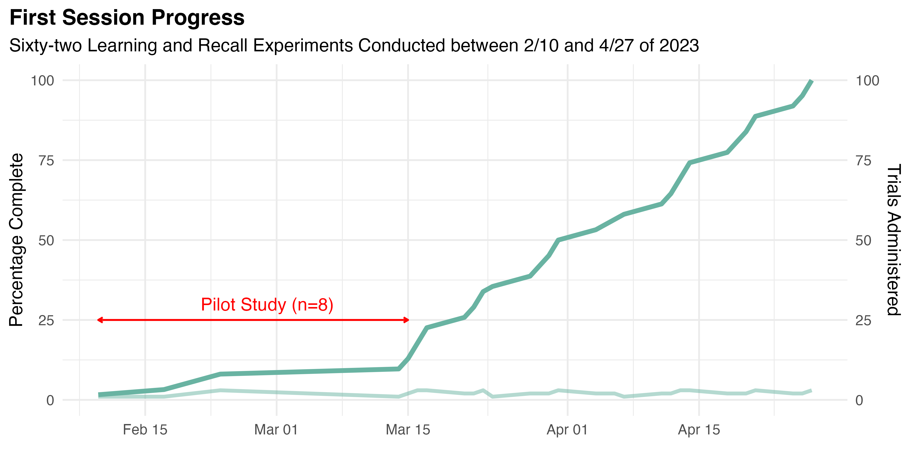
5 Results
5.1 Study Administration and Participation
This study was administered during the Spring of 2023. Ultimately, 62 eligible participants were recruited. All completed the Learning and Recall experiments of the first session beginning February 10th. Progress of the conduct of these trials is illustrated by Figure 5.1.
Only eight trials were run before March 16th. That period was treated as a pilot study, during which the research team was trained, administration methods were refined, the self-service onboarding system was deployed, and version 2.1 of our IRB application was approved. Most significantly, the intake process was adjusted to collect more demographic data, increase the role of the TLX and SUS instruments, and gather BCS data for a companion study.
Otherwise, only minor tweaks were made during the pilot to streamline the experiment’s administration. Although the changes outlined above were not believed to have a material effect on the results, the data collected during the pilot were omitted from further analysis. Following the pilot, steady progress was made until the completion of the study’s first session on April 27th. The second session was conducted during the end of study event on April 29th. Twenty-four of the study’s original participants volunteered to attend and complete the Retention experiment.
5.2 Analysis of Participant Demographics
5.2.1 Univariate Analysis
5.2.1.1 Numeric Demographic Data
After excluding data from the pilot study, 54 participants (Mean age = 22.6, SD = 6.5, range: [19, 47], 3.7% missing) were included in this analysis. Other than age, height (Mean height = 68.6, SD = 4.2, range: [62, 76], 5.6% missing) was the only numeric demographic data collected. As discussed in Section 5.7, height was first recorded following the pilot study, when its impact on user behavior and results was first observed. Both numeric characteristics are visualized with a combined box and scatter plot in Figure 5.2. Where present, the notches of these box plots show the 95% confidence interval around the median.
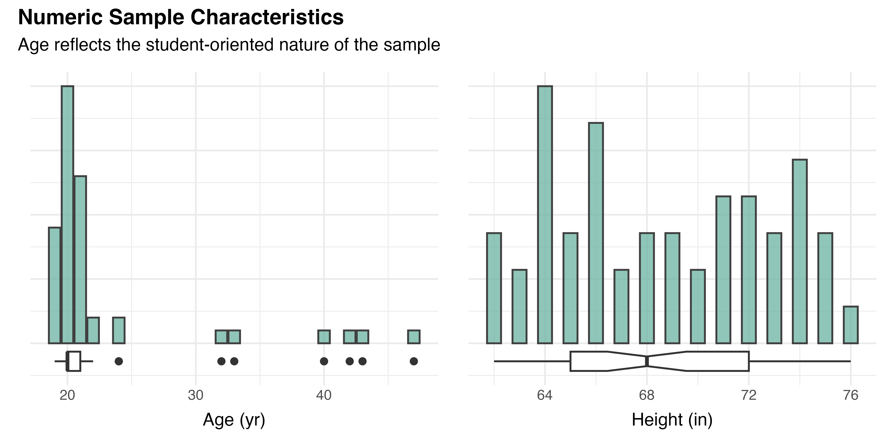
5.2.1.2 Categorical Demographic Data
Of the sample’s 54 participants, 89% (n=48) reported that they mainly speak English at home. As shown in Figure 5.3, the gender composition was relatively balanced, with slightly more males (n=27, 50%) than females (n=26, 48%). The racial makeup of the sample was predominantly White (n=45, 83%) and Asian (n=7, 13%), with smaller representations from two other groups. Fully 98% of participants (n=52) reported a non-Hispanic or Latino ethnicity. The majority of participants (n=41, 77%) were from the United States, though nine other countries were represented, including S Korea (n=3) and Poland (n=2). Saudi Arabia, Germany, UK, Indonesia, Australia, India, and China were also listed as countries of origin by one participant each (n=1). All of this aligns with the study’s recruitment focus.
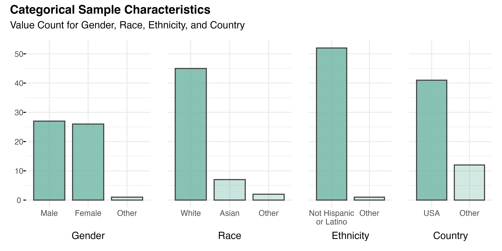
Of the 54 participants, 52% (n=28) reported having a vision prescription. Of those, 13 (100%) were for contact lenses , but 15 (100%) had glasses. Whereas all contact wearers reported they would wear them during the session, among glasses wearers only seven (47%) planned the same. Five (33%) did not intend to do so, and three (20%) gave no indication. This breakdown is summarized by Table 5.1. Two participants also reported color-blindness (n=1) or other vision conditions (n=1). No participants indicated any other condition that might affect their performance.
| Yes | No | NA | Total | |
|---|---|---|---|---|
| Lenses, n (%) | ||||
| Glasses | 7 (47%) | 5 (33%) | 3 (20%) | 15 (100%) |
| Contacts | 13 (100%) | 0 (0%) | 0 (0%) | 13 (100%) |
| Total, n (%) | 20 (71%) | 5 (18%) | 3 (11%) | 28 (100%) |
Following the primary hypothesis testing, additional analyses may explore the differences in key outcomes across these demographic subgroups. That effort will aim to provide additional context and insights into potential underlying factors influencing the findings.
5.2.1.3 Ordinal Demographic Data
Unlike the data above, the categories analyzed in this section are inherently ordered. Responses for each participant’s current Education level (Median = 3.0; Mode = 3, CND; IQR = 0.0) and their experience with Lego (Median = 2.0; Mode = 2, Some experience; IQR = 1.8) and Manufacturing (Median = 1.0; Mode = 1, No experience; IQR = 1.0) are visualized in increasing order by Figure 5.4. The results are mostly in line with expectations based on the recruitment, though it is disappointing to see that 33% of participants (n=18) claimed to have little to no experience with Lego. The great majority were undergraduate students working towards a degree (n=44, 81%), with no experience in manufacturing (n=34, 63%).
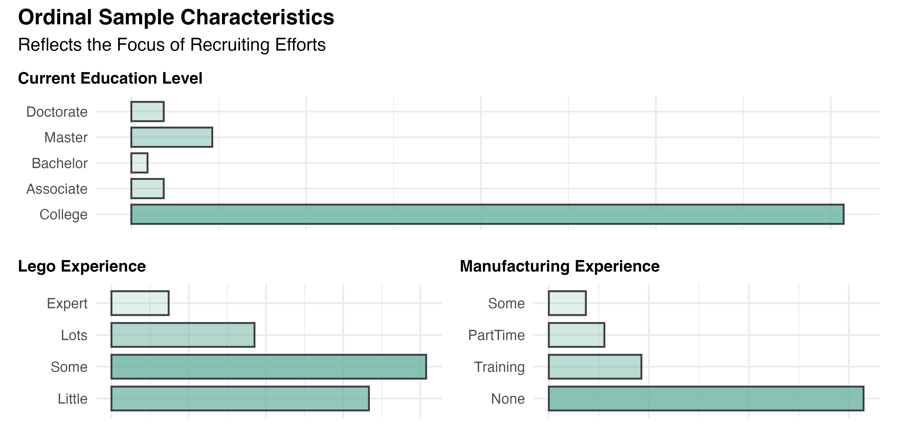
5.2.2 Multivariate Demographic Analysis
In order to assess the equivalence of treatment groups and validate the random assignment that is assumed by most statistical analysis, Age, Gender, Lego experience, and Education were compared across treatment groups. These variables were selected for their meaningful variation and potential relevance to the outcomes of interest. Other notable variables, including Ethnicity and Country of Origin were considered less critical due to their skewed distributions and small subgroup sizes.
Table 5.2 shows the result of this analysis. The Kruskal-Wallis rank sum test was utilized for the numeric variable (Age) to compare distributions across groups, while Fisher’s exact test was applied to the categorical and ordinal variables (Gender, Education, and Lego experience) to assess the independence of distributions from treatment assignments.
| Characteristic | PWI N = 14 (26%) |
PAR N = 12 (22%) |
AR N = 14 (26%) |
MR N = 14 (26%) |
p-val |
|---|---|---|---|---|---|
| Age | 22 (5) | 21 (4) | 23 (8) | 24 (8) | 0.2 |
| Gender | 0.4 | ||||
| Female | 7 (50%) | 7 (58%) | 8 (57%) | 4 (29%) | |
| Male | 6 (43%) | 5 (42%) | 6 (43%) | 10 (71%) | |
| Non-Binary | 1 (7.1%) | 0 (0%) | 0 (0%) | 0 (0%) | |
| Lego | 0.5 | ||||
| Little | 4 (29%) | 6 (50%) | 5 (36%) | 3 (21%) | |
| Some | 4 (29%) | 4 (33%) | 8 (57%) | 6 (43%) | |
| Lots | 4 (29%) | 2 (17%) | 1 (7.1%) | 3 (21%) | |
| Expert | 2 (14%) | 0 (0%) | 0 (0%) | 2 (14%) | |
| Education | 0.8 | ||||
| College | 10 (71%) | 11 (92%) | 11 (79%) | 12 (86%) | |
| Associate | 1 (7.1%) | 0 (0%) | 1 (7.1%) | 0 (0%) | |
| Bachelor | 1 (7.1%) | 0 (0%) | 0 (0%) | 0 (0%) | |
| Master | 2 (14%) | 0 (0%) | 1 (7.1%) | 2 (14%) | |
| Doctorate | 0 (0%) | 1 (8.3%) | 1 (7.1%) | 0 (0%) |
The high p-values for Age, p=0.2; Gender, p=0.4; Lego, p=0.5; and Education, p=0.8 indicate that these observed characteristics are not strongly associated with treatment groupings. This result validates the group randomization effort, mitigating the influence of confounding variables, and reducing bias in the data. It is essential to the validity of most of the statistical tests employed by this study, which assume sample independence.
5.3 \(H_1\): Learning Phase Analysis
The results of the first phase of the experiment are tested with three hypotheses, each of which explore the affect of instructional method (treatment) on key measures of learning: average task completion time (TCT), rate of change of TCT, and the average number of uncorrected errors (UCE). Only completed tasks, the primary result of interest, are considered in this analysis. While excluding incomplete tasks may limit the generalizability of the findings to scenarios where time constraints are common, it ensures the analysis is based on objective, directly observed data and avoids introducing assumptions or biases that could arise from predicting results for unfinished tasks.
One final step of data preparation was taken to account for drop-outs and other system events, along with time spent making repairs. This lost time was deducted from measured task times to give a more accurate record of participant performance. Forty-six of 272 completed tasks (16.9%) were affected by this adjustment.
5.3.1 Descriptive Statistics for Granular Data
The data contains 272 observations of the following 2 variables:
- Task Completion Time (sec): n = 272, Mean = 97.94, SD = 44.18, Median = 88.10, MAD = 37.06, range: [36.23, 288.13], Skewness = 1.37, Kurtosis = 2.42, 0% missing
- Uncorrected Error Count: n = 272, Mean = 2.65, SD = 3.64, Median = 0.00, MAD = 0.00, range: [0, 13], Skewness = 1.34, Kurtosis = 0.69, 0% missing
These statistics provide a high-level summary of performance across all tasks and participants, where each observation corresponds to a single repetition of the Learning task. Both Task Completion Time (TCT) and Uncorrected Error Count (UCE) show considerable variance, as depicted in Figure 5.5.
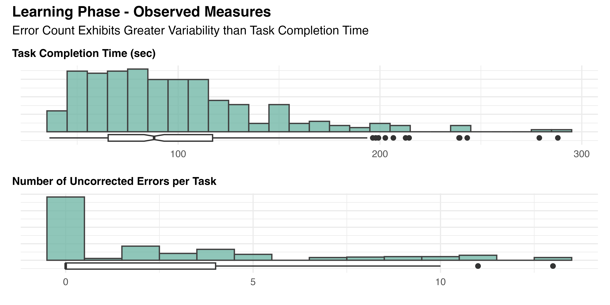
Compared to TCT, with a coefficient of variation (CV) of 0.45, UCE shows substantially greater spread (CV=1.37) and the presence of a floor effect. The latter could potentially suggest limitations in the task’s ability to capture a full range of participant performance. Further investigation is required to determine if this is due to task complexity or other factors.
5.3.2 Aggregated Data
Table 5.3 presents participant-level metrics, including the number of tasks completed along with the average TCT and UCE per task. In addition to the overall results, the data is decomposed by assigned treatment group to allow for comparisons across conditions. Note that the statistics presented are the overall (aka “grand”) mean and median values. That is, they are the average or middle values of all individual participant averages. This provides overall summary statistics for each treatment group that reflect the central tendency and variability among the average outcomes reported by participants within each group.
| Characteristic | Overall n = 54 (100%) |
PWI n = 14 (26%) |
PAR n = 12 (22%) |
AR n = 14 (26%) |
MR n = 14 (26%) |
|---|---|---|---|---|---|
| Number of Tasks Completed | |||||
| Mean (SD) | 5.0 (2.1) | 7.1 (2.3) | 5.9 (1.2) | 3.7 (1.0) | 3.6 (1.0) |
| Median (IQR) | 5.0 (3.0, 6.0) | 7.5 (5.3, 8.0) | 6.0 (5.0, 7.0) | 3.5 (3.0, 4.8) | 3.0 (3.0, 4.0) |
| Avg TCT per Task (sec) | |||||
| Mean (SD) | 113.2 (42.8) | 79.8 (30.1) | 89.6 (21.1) | 142.0 (37.0) | 137.9 (39.4) |
| Median (IQR) | 107.7 (77.3, 140.6) | 68.5 (65.0, 99.5) | 83.8 (75.4, 104.4) | 141.7 (111.8, 153.5) | 127.9 (114.4, 156.4) |
| Avg UCE per Task | |||||
| Mean (SD) | 2.2 (3.1) | 6.1 (3.5) | 0.8 (1.3) | 0.8 (1.3) | 0.7 (1.3) |
| Median (IQR) | 0.3 (0.0, 3.5) | 4.9 (4.0, 8.8) | 0.3 (0.0, 0.8) | 0.0 (0.0, 1.1) | 0.0 (0.0, 0.5) |
See Figure 5.6 for a depiction of the grand means for all variables, with 95% confidence intervals for each. Observe that the previously noted variability and positive skew are also present in the grouped data, though both are less pronounced due to averaging effects. It appears that the PWI treatment group may have prioritized speed over accuracy.
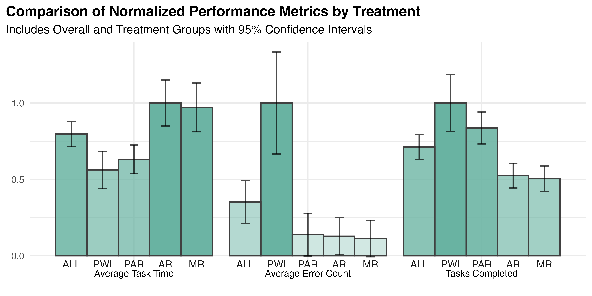
5.3.2.1 Assess outliers
Given the level of variation and spread seen above, the presence of outliers was analyzed. Participant-level outliers within treatment groups were the focus, rather than individual data points across the entire dataset. This method identifies annomolous participant level contributions to treatment variability.
Four different tests were used to assess each participant as an outlier in their treatment group: (1) Tukey’s Fences at 1.5 times the IQR, (2) 2.5 times the Z-score, (3) outside the 5th and 95th percentiles, and (4) using the Mahalanobis distance. TCT and UCE were each tested separately using the first three methods. The fourth method is a multivariate test that considers TCT and UCE together. The results are summarized in Table 5.4, for all participants that were identified by two or more tests.
| participant | treatment | tot_out | tot_cars | avg_tct_adj | avg_uce |
|---|---|---|---|---|---|
| 1037 | MR | 4 | 2 | 242.2830 | 3.000000 |
| 1063 | AR | 4 | 2 | 236.3440 | 0.500000 |
| 1051 | PAR | 3 | 4 | 139.0902 | 4.000000 |
| 1053 | AR | 2 | 3 | 154.3443 | 3.666667 |
Further investigation of these four participants showed that only #1063 experienced systematic problems that might warrant excluding their performance.1 The others were just poor performers, with unusually high overall TCT and/or UCE. Given the limited amount of data collected per treatment, it was decided to retain all but 1063’s data for hypothesis testing, where additional outlier detection steps may be taken.
5.3.3 \(H_{1a}\): Average Time per Car
The first hypothesis of the learning phase: \[H_{1a}\textrm{: Average task completion time varies with treatment}\]
was tested by comparing the average TCT of each treatment group to understand the magnitude, direction, and significance of differences.
5.3.3.1 Applicable Statistical Methods
Methods based on one-way ANOVA, including Fisher’s or Welch’s parametric methods and their non-parametric equivalent, Kruskal-Wallis’ test by ranks, are commonly used for such comparisons. All assume observations are independent and treatment effects are additive. The use of aggregated data reduces each participant to a single observation, addressing independence. The experimental design generally ensures the treatments themselves are additive, with independent effects on the response.
Parametric methods also require a normal distribution of data within each treatment group. As noted in the original assessment of the learning data, the overall TCT dataset exhibits skewness and kurtosis, suggesting deviations from a normal distribution. This must be revisited with group wise testing of the aggregated data. By averaging the observations and eliminating an outlier, the grouped data may better resemble a normal distribution.
5.3.3.2 Check Model Assumptions
A combination of quantitative and qualitative analysis is required to accurately assess normality of each treatment group. Statistical tests provide a formal but imperfect measure of the data’s shape. Visual confirmation of the characteristic quantile-quantile (Q-Q) plot provides further support for the claim. Table 5.5 tabulates the results of the D’Agostino skewness test, Anscombe-Glynn kurtosis test, and the Shapiro-Wilk normality test. In each case, the null hypothesis (\(H_0\)) for these tests assumes that the data follows the characteristics of a normal distribution. Therefore, low p-values indicate evidence against \(H_0\), suggesting that the data deviates from normality in the tested aspect.
| Group | Skewness | Kurtosis | Normality |
|---|---|---|---|
| ALL | 0.68, 0.037 | 3.63, 0.201 | 0.95, 0.044 |
| MR | 1.28, 0.021 | 4.52, 0.052 | 0.89, 0.084 |
| AR | 0.01, 0.978 | 1.86, 0.294 | 0.93, 0.382 |
| PWI | 1.02, 0.058 | 2.95, 0.505 | 0.85, 0.021 |
| PAR | 1.01, 0.068 | 3.45, 0.221 | 0.9, 0.151 |
From this we see that only PWI fails the normality test (p=0.021), despite showing marginally non-significant skewness (p=0.058). Similarly, MR exhibits significant positive skew (p=0.021) but the Shapiro-Wilk test gives evidence of normality (p=0.084). Both AR and PAR are consistent in confirming normality, though PAR’s slightly positive skew is marginally non-significant (p=0.068).
To reconcile these findings for MR and PWI, and confirm those for AR and PAR, the set of four Q-Q plots in Figure 5.7 were generated. Observations for normal data should fall along or near the line, within the shaded confidence interval. These plots show that PAR and AR both meet the expectations of normality. The MR group mostly aligns with the line, except for a single point in the right tail. This aligns with the skewness and kurtosis test results and provides insufficient evidence to reject normality. On the other hand, the PWI group diverges substantially from the line, with several points leaving the confidence interval. This supports the statistical evidence that the PWI data is not normally distributed.
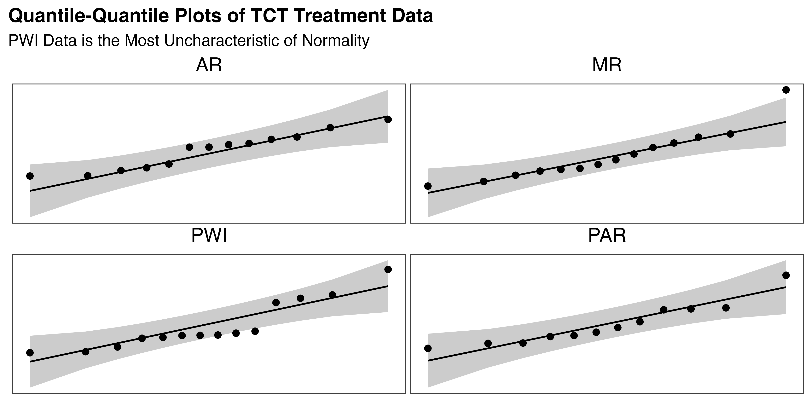
Given these deviations from normality, particularly for the PWI group, a non-parametric approach was adopted. This provides a reliable and straightforward approach for hypothesis testing for data that are non-normal or heteroscedastic (have unequal variances). This decision also ensures robust statistical results in the scale of the original data, easing interpretation.
5.3.3.3 Analysis
Figure 5.8 shows the resulting comparison of average TCT within each treatment group. It combines elements of violin, scatter, and box plots to provide a comprehensive portrayal of the data. Treatment differences were analyzed using the Kruskal-Wallis test by ranks. Its test statistic, \(H\), approximately follows a \(\chi^{2}_{k-1}\) distribution, where \(k\) is the number of groups. Here, \(\chi^{2}_{Kruskal-Wallis}(3)=25.9\), with a p-value of less than 0.001. These results indicate a statistically significant difference between groups. The effect size of this difference is \(\hat{\varepsilon}^{2}_{rank}=0.5\), with \(CI_{95\%}\:[0.4,1.0]\), indicating a moderate to large treatment effect where 50% of the variance in TCT can be explained by the difference in groups. Together, these results provide strong evidence of overall differences in TCT that are both statistically and practically significant.
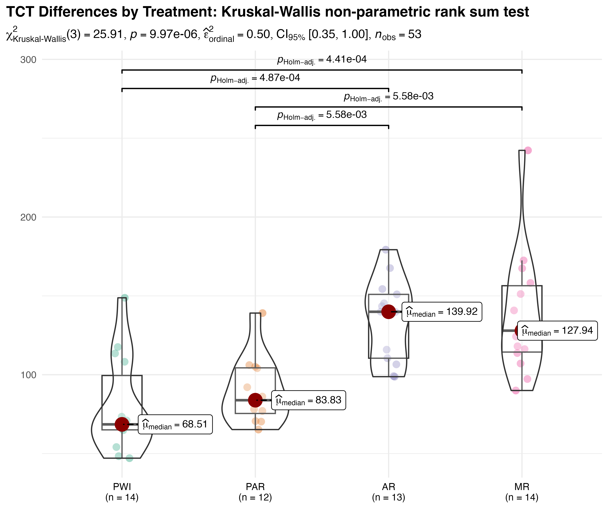
Pairwise comparisons were conducted post-hoc using Dunn’s non-parametric test for Kruskal-type ranked data. Holm’s adjustment for multiple comparisons was preferred over the often cited Bonferroni method, which tends to be too conservative. The results show that PWI and PAR are both significantly faster than AR and MR, with all p-values less than 0.01.
A post-hoc simulation was run to validate these results by estimating the statistical power. Power analysis measures the effectiveness of a statistical test in detecting true differences when they exist. High power (typically 0.8 or above) suggests that the test is appropriate for the given data and experimental conditions, therefore supporting factual decision-making. The simulation repeatedly applies the Kruskal-Wallis test to data generated based on the observed mean and effect size, and resulting power is the proportion of tests that correctly reject the null hypothesis. The outcome of 1 (100% power), while uncommon, suggests that, for the conditions of this experiment (n=53, an average of 13.25 samples in each of the four groups, \(\hat{\varepsilon}^{2}=0.5\), and \(\alpha = 0.05\)), the test is extremely effective at detecting the observed differences. The combination of a large effect size and a reasonable sample size is largely attributable to this value, which offers great confidence in the validity of the test results.
5.3.3.4 \(H_{1a}\) Result
Based on analysis of the data and validation of the methods, it is determined that sufficient statistical evidence exists to accept \(H_{1a}\): average task completion time varies by treatment. Specifically, the PWI and PAR instructional methods are both equivalent and faster than AR and MR, which are also equivalent to one another.
5.3.4 \(H_{1b}\): Learning Rates
The second hypothesis of the learning phase: \[H_{1b}\textrm{: Learning rates vary with treatment}\]
will be tested by comparing how TCT changes with each repetition of the task based on treatment. Decreased TCT is used as a measure of the learning effect, so a change in TCT over time is a proxy for learning rate.
5.3.4.1 Applicable Statistical Methods
It is tempting to assess this using aggregated data as before. For example, the average change in TCT between consecutive tasks completed might give suitable measure. For clarity, this can be expressed as follows for each participant, \(j\):
\[ \small{ \overline{\Delta TCT_{j}} = \frac{\sum_{i=1}^{N-1} (TCT_{i+1} - TCT_i)}{N - 1} } \tag{5.1}\]
where \(N\) is the total number of tasks completed by participant \(j\), and \(i\) indexes each of the \(N-1\) differences in TCT. This metric can be compared by group using the approach employed by \(H_{1a}\), as seen in Figure 5.9. The results show that there is a significant difference in groups (p = 0.002), with small to moderate effect size \(\hat{\varepsilon}^{2}_{rank}=0.29\). Significant pairwise differences were identified between PWI and both AR (p=0.027) and MR (p=0.039) as well as PAR and the same (AR p=0.015, MR p=0.025).
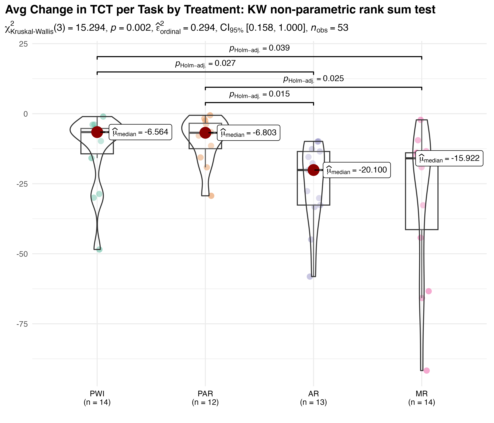
While this method offers initial insights and highlights significant differences in learning rates across treatment groups, it has crucial limitations. Aggregating data by participant and within treatments masks both between and within-participant variability, discarding important nuances in learning rates. By ignoring the repeated measures nature of the data it fails to capture how learning rate changes over time, and how that differs between individuals. It also does not account for imbalanced repeated measures, which may lead to biased estimates. By reducing the number of observations, it may also limit the statistical power of the test. Finally, this method does not account for the non-linear nature of change in TCT over time, further limiting the validity of these findings. These simplifying assumptions may be reasonable for a gross estimate of overall differences, e.g., average TCT, but they are not appropriate for an in-depth analysis of the rate and change of learning in the presence of individual and treatment effects.
For analysis of this sort, particularly where repeated measures are nested within each group and participant variation is an important consideration, mixed-effects models are often used. These models provide a thorough and accurate analysis by accounting for individual differences in learning rates and leveraging all available repeated measures data. This approach preserves data granularity, explicitly models the dynamic aspect of learning, and is specifically designed to handle imbalanced data. It increases the statistical power and flexibility to detect effects and interactions in a complex data structure, and it can also account for non-linear response data. Overall, mixed-effects models provide a robust framework for examining the interaction between treatment and learning effect over time.
The general form of a suitable linear mixed-effects model that expresses TCT as a function of task sequence, ignoring treatment effects, is:
\[ \small{ TCT_{ij}=(\beta_0+U_{0j})+(\beta_1+U_{1j})(SEQ_{ij})+\varepsilon_{ij} } \tag{5.2}\]
where:
- \(i\) and \(j\) are the indices for each observation and participant, respectively.
- \(\beta_0\) is the overall intercept, a baseline value of \(TCT\).
- \(U_{0j}\) is the participant variation on the intercept.
- \(\beta_1\) is the overall slope.
- \(U_{1j}\) is the participant variation on the slope.
- \(SEQ_{ij}\) is the time value associated with each observation \(i\) of participant \(j\), i.e., the task number.
- \(\varepsilon_{ij}\) represents the residuals for each observation—variation not accounted for by the model.
This formulation allows for random intercepts, \((\beta_0+U_{0j})\), and slopes \((\beta_1+U_{1j})\), each based on individual differences per participants \(U_j\). In the context of this analysis those can be interpreted as individual starting points (intercept) and learning rates (slope). While Equation 5.2 makes it easy to understand how participant-level variation contributes to both slope and intercept, it is more commonly formulated as:
\[ \small{ TCT_{ij} = (\beta_0 + \beta_1 SEQ_{ij}) + (U_{0j} + U_{1j}SEQ_{ij}) + \varepsilon_{ij} } \tag{5.3}\]
where the terms are rearranged to differentiate fixed and random effects. The first term corresponds to group-level fixed-effects (\(\beta_i\)) while the second captures the random-effects of between- and within-participant variation (\(U_j\)). This is visualized in Figure 5.10, where the completion time for each task iteration is shown in all treatment groups. Black lines indicate the best fit within each group, the fixed-effect term, and colored lines show the same for each participant, reflecting the random-effect term.
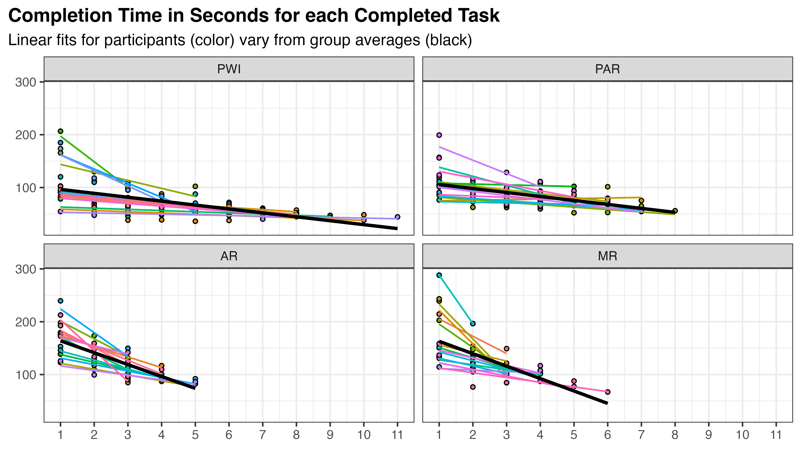
Using linear mixed effect models (LMEs) to assess treatment effect is a two-step process. First, a model using task number as the only predictor is fit to the data, including both fixed and random effects. Because this model is independent of the predictor of interest (treatment), it is referred to as the unconditioned model. Once selected and validated, this acts as a baseline for comparison with more complex models that incorporate the treatment effects. These so-called conditioned models are compared with the baseline to see which, if any, improve the model fit. Finally, the parameters of the model that best explains the data are interpreted to quantify the relationships between time, treatment, and the response. The following sections will elaborate on each step of this process.
5.3.4.2 Unconditional Models of Time
To find an unconditional model that best fits the data, several options of increasing complexity were considered. In the model selection process, it is important to consider that learning is an inherently non-linear process. Typically, TCT starts high and decreases with each training iteration, but the rate of decrease is not constant. The pattern often resembles exponential decay, with rapid initial improvement followed by more gradual changes. When working with an LME, quadratic terms can be used to create a curvilinear approximation of this effect. This is depicted in Figure 5.11, where each line is fit using a quadratic term for sequence: \(TCT \approx \beta_{0} + \beta_{1}SEQ + \beta_{2}SEQ^2\). The result appears provide an overall improvement to fit at both participant and treatment levels compared to the previous linear formulation.
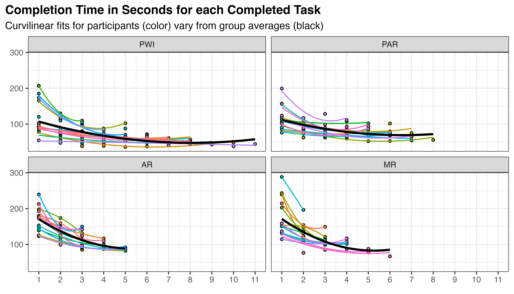
Seven models of increasing complexity were fit, as summarized in Table 5.6. This table adopts the model formulation notation used by many R modeling packages, including lmer, which is used here. A fixed overall intercept is specified for all models with the first term (1). Random effects are described within the parentheses of the last term, where terms to the right of the bar (|) are grouping variables, and those to its left specify the random intercept and coefficients. Terms between the intercept and random effects, outside the parentheses, are fixed effects with constant coefficients. For brevity, Sequence and Participant terms have been abbreviated in this table as s and p, respectively. The “XF” column describes the non-linear transformation employed (quadratic or log), and “SE” identifies the sequence effect. SE is “Fixed” where SEQ is included only as a fixed effect, and “Both” where it also appears in the random effect.
| # | Model Formulation in {lmer} Notation |
XF | SE |
|---|---|---|---|
| 1 | 1 + (1 | p) | None | None |
| 2 | 1 + s + (1 | p) | None | Fixed |
| 3 | 1 + s + (1 + s | p) | None | Both |
| 4 | 1 + s + s^2 + (1 + s + s^2 | p) | Quad | Both |
| 5 | 1 + log(s + 1) + (1 | p) | Log | Fixed |
| 6 | 1 + log(s + 1) + (1 + log(s + 1) | p) | Log | Both |
| 7 | 1 + s + log(s + 1) + (1 + s + log(s + 1) | p) | Log | Both |
For example, model 4 has a fixed overall intercept (1) with additional fixed effects for s and s^2. Its random effects (1 + s + s^2 \| p) can be interpreted as random intercepts and slopes for s and s^2 for each participant. This can be expressed in the previous mathematical notation as:
\[\begin{align} \small TCT_{ij} =\: &(\beta_{0} + \beta_1 SEQ_{ij} + \beta_2 SEQ_{ij}^2) \label{eq:h1b-m4} \\ &+ (U_{0j} + U_{1j} SEQ_{ij} + U_{2j} SEQ_{ij}^2) + \varepsilon_{ij} \notag \end{align}\]
Prior to fitting, the sequence predictor was transformed from discrete integers to continuous values in the range [0, 1]. This is common practice to prevent numerical issues, aid model convergence, and to make the results easier to interpret and generalize. Additionally, The treatment variable was converted to an unordered factor to remove any implied ranking among treatments that could bias the models. Treatment was originally ordered to ensure the PWI, PAR, AR, MR presentation of results in charts and tables. It has no predictive implications.
Finally, only a subset of the data is used. As seen in Figure 5.10 and Figure 5.11, the number of task iterations completed in the allotted time varied substantially by treatment. Numerous attempts to fit the full dataset using various modeling techniques all resulted in significant overfitting, particularly after the fifth iteration where available observations decline rapidly and treatments become imbalanced (see Table 5.7). The overfit models produced poor extrapolations that were not reflected in performance diagnostics, as these measures only compare observed and predicted values. To address this, it was decided to use data only from the first five task iterations, where all treatments are still reasonably represented. This cutoff was chosen as the best trade-off between available data and extrapolation quality, after considering earlier (four) and later (six) alternatives.
1 2 3 4 5 6 7 8 9 10 11
PWI 14 14 14 13 12 10 9 7 3 2 1
PAR 12 12 12 12 11 7 4 1 0 0 0
AR 13 13 13 7 4 0 0 0 0 0 0
MR 14 14 13 6 2 1 0 0 0 0 0Following those data transformations, the models were fit using maximum likelihood estimation (rather than the default restricted maximum likelihood) to enable valid comparisons between models with different fixed effects structures. Fitting was accomplished using the overloaded version of lme4::lmer from lmerTest, which adds p-values for fixed effects using Satterthwaite’s method. The results were compared using performance from {compare_performance}, the output of which is summarized in Table 5.8.
Columns include Akaike (AIC) and Bayesian (BIC) Information Criterion, conditional and marginal \(R^2\), Interclass Correlation Coefficient (ICC), and Root Mean Squared Error (RMSE). AIC and BIC are, respectively, frequentist and Bayesian measures of the amount of information lost by a model when approximating the true data generating process. Both account for the number and relevance of predictors, and lower scores are better. \(R^2_{cond}\) represents the variance explained by both fixed and random effects, while \(R^2_{marg}\) only accounts for the fixed effects. ICC measures the proportion of total variance that is accounted for by the grouping of data. In this context, high ICC values suggest that a larger portion of the variability in TCT is due to differences between participants, not within (i.e., across task iterations). Finally, RMSE is a measure of the average magnitude of the model’s prediction error (residuals).
| Name | AIC | BIC | R2 (cond.) | R2 (marg.) | ICC | RMSE |
|---|---|---|---|---|---|---|
| m1 | 2242.07 | 2252.32 | 0.61 | 0.00 | 0.61 | 24.56 |
| m2 | 2127.64 | 2141.31 | 0.75 | 0.19 | 0.69 | 18.17 |
| m3 | 2060.66 | 2081.16 | 0.84 | 0.30 | 0.77 | 14.51 |
| m4 | 1960.11 | 1994.27 | 0.82 | 7.93 | ||
| m5 | 2105.54 | 2119.21 | 0.78 | 0.21 | 0.72 | 17.00 |
| m6 | 2027.19 | 2047.68 | 0.88 | 0.32 | 0.82 | 12.23 |
| m7 | 1943.30 | 1977.47 | 0.95 | 0.28 | 0.93 | 7.10 |
Model 4 produced a singular fit, so conditional \(R^2\) and ICC were not available for that candidate model.
The result of this comparison shows that m7 outperforms the other options in most measures, with the lowest AIC, BIC, and RMSE. Approximately 95% of the variance in TCT can be explained by this model (\(R^2_{cond}\)), of which only 28% is due to its fixed effects (\(R^2_{marg}\)). The high ICC (0.93) indicates that a large proportion of the total variance is due to differences between participants, suggesting that individual variation is a crucial factor in the model. The resulting predictions are plotted in Figure 5.12.
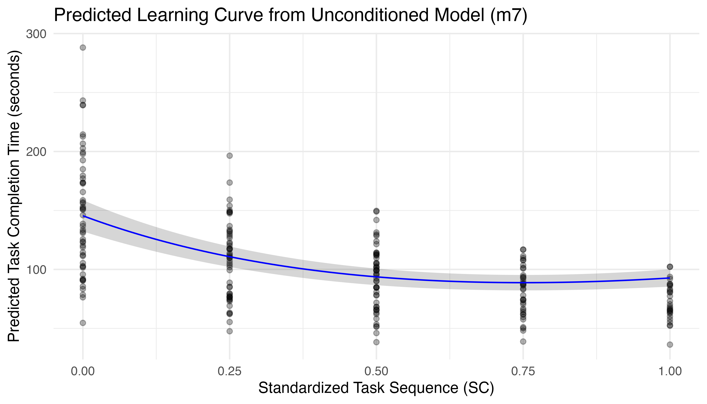
Even with the subset of data, we see that the log-based model begins to exhibit a slight upward trend after the fourth iteration, which defies learning theory, expectations, and the limited data from subsequent iterations. Model fits based on exponential and hyperbolic forms, which better align with theoretical learning curves, led to more promising predictions but were plagued by convergence issues, especially as additional terms were added to account for treatment and its interactions. This is a limitation of the study that originates primarily from the imbalanced experimental design employed by the learning phase.
Inspecting the fixed effects parameters for m7, summarized in Table 5.9, shows that all terms are significant. The intercept of 145.5 seconds establishes the baseline average performance for all participants on the first iteration. Estimated coefficients for the linear and log terms of sequence show that these terms compete for dominance, with the linear term increasing TCT at a rate of 246.5 seconds per unit of seq.fp, the continuous transformation of task iteration number. This is offset by the log term, which decreases TCT by 431.7 seconds per unit of \(\log{(\text{seq.fp} + 1)}\). These coefficients represent the change in TCT for a one-unit change in their respective transformed sequence terms, resulting in a non-linear learning curve when combined. The strong negative correlation of -0.75 between the log term and intercept indicates that participants with higher initial TCT experience a stronger effect from the log term, which drives rapid initial improvement. In learning theory, this phenomenon is known as the power law of practice. It formalizes the idea that, all other things constant, the farther a learner starts from expected proficiency, the faster they will initially improve.
Package 'merDeriv' needs to be installed to compute confidence intervals
for random effect parameters.| Parameter | Coefficient | SE | 95% CI | t(215) | p | Sig |
|---|---|---|---|---|---|---|
| (Intercept) | 145.496 | 6.776 | (132.14, 158.85) | 21.471 | < .001 | *** |
| seq.fp | 246.480 | 28.833 | (189.65, 303.31) | 8.548 | < .001 | *** |
| log(seq.fp + 1) | -431.712 | 45.466 | (-521.33, -342.10) | -9.495 | < .001 | *** |
Validation of m7 confirmed that the residuals exhibit equal variance (p = 0.16), but are not normally distributed (Shapiro-Wilk test, p = 0.004). Traditional QQ plots of the raw residuals do not properly account for the hierarchical structure and non-independence of mixed effect models, leading to overly optimistic results. The DHARMa package was specifically designed to address this problem by comparing observed residuals to a large number of simulations from the fitted model. This technique provides a more robust and accurate representation of model accuracy. Diagnostics produced by testResiduals indicate deviation from the expected distribution of residuals (Kolmogorov-Smirnov test, p = 0.03) without significant dispersion issues (p = 0.86) or outliers (p = 0.43). Visual inspection of residual plots confirmed these findings (Figure 5.13).
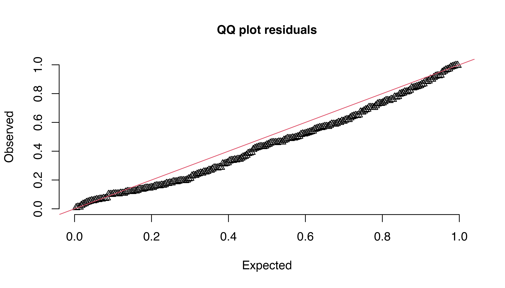
Given these minor deviations from model assumptions, the model was refit using a robust linear mixed model designed to mitigate those issues and ensure reliable inference. Robust LMs (RLMs) use techniques such as M-estimation or MM-estimation to reduce the influence of high-leverage observations, and weighted estimation to equalize variance. This approach makes RLMs less sensitive to violations of normality assumptions in both fixed and random effects, and more resistant to departures from other common assumptions of linear mixed models. As a result, RLMs typically provide more stable and accurate parameter estimates when dealing with non-ideal data conditions.
The result from robustlmm::rlmer is compared with the original fit in Table 5.10. Robust fits for two additional variations of m7 are also included. Both add the initial TCT as a predictor, first as a covariate, and then including interactions with the linear and log terms in the second. This was done to account for the impact of baseline performance on the model, as discussed above. As seen in Table 5.10, both models incorporating initial TCT (m7r_ti and m7r_ta) show much higher \(R^2_{marg}\) values, indicating that initial performance explains a large portion of the fixed effects variance. The version with interactions also exhibits the best ICC and RMSE scores, suggesting it is the best choice for further development.
| Name | R2 (cond.) | R2 (marg.) | ICC | RMSE |
|---|---|---|---|---|
| m7 | 0.95 | 0.28 | 0.93 | 7.10 |
| m7r | 0.96 | 0.29 | 0.95 | 6.97 |
| m7r_ta | 0.99 | 0.78 | 0.96 | 7.50 |
| m7r_ti | 0.99 | 0.89 | 0.90 | 6.16 |
These results, particularly the decrease in RMSE (6.16), indicate meaningful performance gains were achieved by the robust fit. However, the real benefit comes from improved model diagnostics. The robust model reduces heteroscedasticity (p = 0.31) and down-weights extreme values as seen in Figure 5.14. Fourty-one residuals and six random effects were affected, addressing potential outliers or overly influential observations. The low residual error achieved (SD = 4.26) aligns with the high \(R^2_{cond}\) previously noted. While the Shapiro-Wilk test still indicates non-normality of residuals (p < 0.001), this is less concerning for robust models, which are designed to perform well even when normality assumptions are violated.
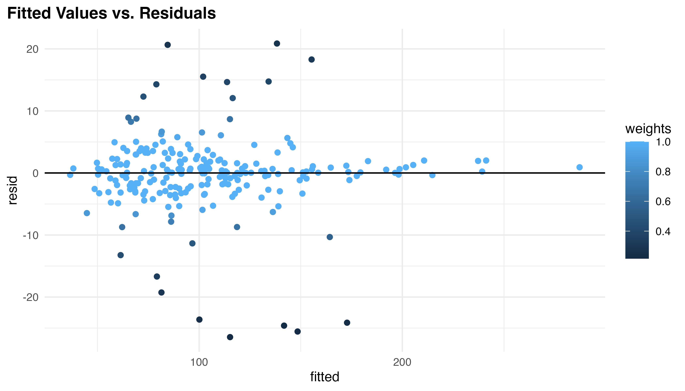
As a final model validation, Figure 5.15 shows the predictions generated by the robust model for the first five participants in each treatment. In this figure, the black circles and lines represent observed TCT values for each participant, while the colored curves represent the RLM’s predictions. Each row corresponds to a different treatment group (AR, MR, PAR, PWI), and each subplot shows data for an individual participant.
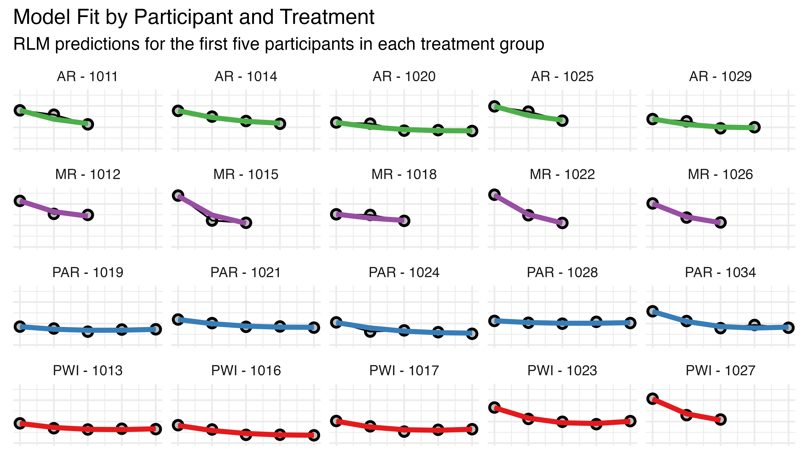
This visualization allows for a comparison between observed data and model predictions across different treatments and participants, and helps confirm that a good fit is obtained for the specified range of observation counts. The variation in TCT is evident here, with participants assigned to the PWI and PAR groups completing substantially more task iterations than their AR / MR peers.
| Parameter | Coefficient | SE | CI | t | p | Sig |
|---|---|---|---|---|---|---|
| (Intercept) | 0.189 | 1.832 | (-3.40, 3.78) | 0.103 | 0.918 | |
| seq.fp | -224.576 | 60.753 | (-343.65, -105.50) | -3.697 | < .001 | *** |
| initial_tct | 0.996 | 0.012 | (0.97, 1.02) | 83.539 | < .001 | *** |
| log(seq.fp + 1) | 354.028 | 85.711 | (186.04, 522.02) | 4.130 | < .001 | *** |
| seq.fp:initial_tct | 3.359 | 0.435 | (2.51, 4.21) | 7.715 | < .001 | *** |
| initial_tct:log(seq.fp + 1) | -5.539 | 0.599 | (-6.71, -4.36) | -9.244 | < .001 | *** |
Table 5.11 summarizes the fixed effects parameters for m7r_ti, revealing a complex interplay of factors influencing task completion time (TCT). The intercept term is near-zero (0.189) and not likely significant2 (t = 0.10). This counter-intuitive result is a direct consequence of including initial TCT as an explanatory variable, centering predictions around each participant’s starting point and calculating deviations from initial performance rather than absolute TCT values. The initial_tct coefficient (0.996, t = 83.54) is highly significant and nearly 1, indicating that initial performance is the dominating predictor of subsequent performance, a role played by the intercept in prior formulations. The linear (seq.fp: -224.6, t = -3.70) and logarithmic (log(seq.fp + 1): 354.0, t = 4.13) terms for sequence are both significant and compete for dominance, with signs reversed from the m7 model. This sign reversal is another consequence of including initial TCT. The larger magnitude of the logarithmic term suggests a strong non-linear component to learning, aligning with theory, expectations, and observed values. Significant interactions between initial TCT and both the linear (3.36, t = 7.72) and logarithmic (-5.54, t = -9.24) terms reveal how baseline performance affects TCT changes over time. These interactions suggest that participants with higher initial TCT tend to have a slower linear decrease but stronger logarithmic decrease in TCT over time.
Finally, the model’s random effects structure allows for participant-level variations in both the intercept and slope for the linear and log terms. Together, this sophisticated design incorporates the power law of practice in a nuanced, participant-specific manner. The combination of linear and logarithmic terms, along with their interactions with initial performance, allows it to represent complex, dynamic learning patterns that vary based on sequence, starting proficiency, and participant idiosyncrasies.
To ease its interpretation, this model can be expressed mathematically as:
\[\begin{align} \small \text{TCT}_{ij} &=\: 0.189 + (0.996 \times \text{TCT}_{0i}) - (224.6 \times \text{SC}_{ij}) + \left( 354.0 \times \log(\text{SC}_{ij} + 1) \right) \label{eq:m7r-ti-form} \\ &\quad + (3.36 \times \text{SC}_{ij} \times \text{TCT}_{0i}) - \left(5.54 \times \log(\text{SC}_{ij} + 1) \times \text{TCT}_{0i} \right) \notag \\ &\quad + \text{RE}_{ij} + \varepsilon_{ij} \notag \end{align}\]
Where:
- \(i\) and \(j\) are indices for participant and task iteration
- \(TCT_{ij}\) is the Task Completion Time in seconds
- \(TCT_{0i}\) is the initial Task Completion Time
- \(SC_{ij}\) is the standardized sequence count, \(\text{SC} = (\text{SEQ} - 1) / (\max(\text{SEQ}) - 1)\)
- \(RE_{ij}\) represents the random effects
- \(\varepsilon_{ij}\) is the residual error term
Note that \(RE_{ij}\) can be further broken down as:
\[ \small{ \text{RE}_{ij} = U_{INTi} + (U_{LINi} \times \text{SC}_{ij}) + \left( U_{LOGi} \times \log(\text{SC}_{ij} + 1) \right) } \tag{5.4}\]
Where the participant-specific random effects for intercept, linear, and log terms are:
- \(U_{INTi} \sim \mathcal{N}(0, \sigma_{INT}^2)\) and \(\sigma_{INT} = 0.749\)
- \(U_{LINi} \sim \mathcal{N}(0, \sigma_{LIN}^2)\) and \(\sigma_{LIN} = 108.34\)
- \(U_{LOGi} \sim \mathcal{N}(0, \sigma_{LOG}^2)\) and \(\sigma_{LOG} = 160.37\)
These terms are participant-specific (as noted by the subscript \(i\)), and have a complex correlation structure. Notably, there is a strong negative correlation (-0.99) between the random effects for seq.fp and log(seq.fp + 1), indicating these terms strongly counteract each other at the participant level. The intercept has a moderate negative correlation with seq.fp (-0.68) and a moderate positive correlation with log(seq.fp + 1) (0.79). Finally, the residual error, \(\varepsilon_{ij} \sim \mathcal{N}(0, 4.256^2)\). Together, these specifications provide a complete picture of the model’s structure and variability.
5.3.4.3 Conditional Models and Hypothesis Testing
To understand the treatment effects and test \(H_{1b}\), a model conditioned on treatment must be fit. Using m7r_ti as a base, three models of increasing complexity were again fit. The first includes treatment as a covariate predictor, the second includes interactions with the linear term, and the final model adds interactions with the log term. As before, these were fit with robustlmm::rlmer, and performance of the resulting models is compared in Table 5.12.
| Name | R2 (cond.) | R2 (marg.) | ICC | RMSE |
|---|---|---|---|---|
| m7r | 0.96 | 0.29 | 0.95 | 6.97 |
| m7r_ti_c1 | 0.98 | 0.83 | 0.89 | 7.51 |
| m7r_ti_c2 | 0.99 | 0.93 | 0.86 | 5.93 |
| m7r_ti_c3 | 0.99 | 0.65 | 0.97 | 7.07 |
All models incorporating treatment as a fixed effect show a substantial increase in \(R^2_{marg}\), suggesting it improves the model’s explanatory power. Model m7r_ti_c2, which includes treatment interactions with the linear term, performs better than the alternatives in every metric (\(R^2_{marg}\) = 0.93, ICC = 0.85, RMSE = 5.93) except \(R^2_{cond}\), where it matches the most complex model (0.99). Furthermore, where the other models produced singularity warnings during the fit, c2 did not. These warnings did not invalidate the results for c1 or c3, as robustlmm automatically negotiated to an alternate optimizer. But the added stability provides additional comfort.
Warning: Using `size` aesthetic for lines was deprecated in ggplot2 3.4.0.
ℹ Please use `linewidth` instead.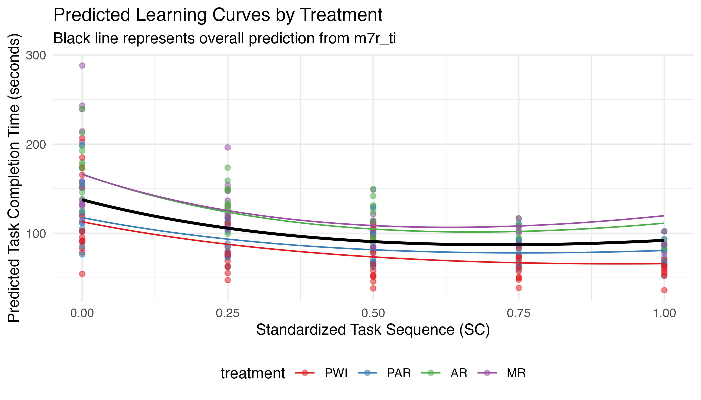
Figure 5.16 plots the predicted learning curves for each treatment based on their mean \(TCT_{0}\). The black line shows the predictions from the prior model, without treatment effects. All treatments show a general non-linear decrease in TCT with sequence, demonstrating learning. PWI and PAR perform better than average, while AR and MR are slower. This ranking persists through all iterations, despite clear differences in initial performance. To quantify these trends in statistical terms, Table 5.13 summarizes the parameters for the model’s fixed effects.
| Parameter | Coefficient | SE | CI | t | p | Sig |
|---|---|---|---|---|---|---|
| (Intercept) | 0.553 | 1.903 | (-3.18, 4.28) | 0.291 | 0.771 | |
| seq.fp | -260.217 | 81.759 | (-420.46, -99.97) | -3.183 | 0.001 | ** |
| initial_tct | 0.989 | 0.013 | (0.96, 1.01) | 73.906 | < .001 | *** |
| treatmentPAR | 0.006 | 1.544 | (-3.02, 3.03) | 0.004 | 0.997 | |
| treatmentAR | 1.842 | 1.672 | (-1.43, 5.12) | 1.102 | 0.271 | |
| treatmentMR | 1.206 | 1.665 | (-2.06, 4.47) | 0.725 | 0.469 | |
| log(seq.fp + 1) | 399.331 | 111.641 | (180.52, 618.14) | 3.577 | < .001 | *** |
| seq.fp:initial_tct | 3.529 | 0.562 | (2.43, 4.63) | 6.278 | < .001 | *** |
| seq.fp:treatmentPAR | 12.707 | 5.396 | (2.13, 23.28) | 2.355 | 0.019 | * |
| seq.fp:treatmentAR | 21.055 | 6.513 | (8.29, 33.82) | 3.233 | 0.001 | ** |
| seq.fp:treatmentMR | 29.953 | 6.529 | (17.16, 42.75) | 4.588 | < .001 | *** |
| initial_tct:log(seq.fp + 1) | -5.897 | 0.757 | (-7.38, -4.41) | -7.787 | < .001 | *** |
These results are similar to those for the unconditioned model (Table 5.11). All terms previously found significant remain so, including \(TCT_{0}\), the linear and log terms, and their interactions with \(TCT_{0}\). The relevant interpretations stand, though the magnitude of the effects vary slightly. Importantly, all interactions between treatment and seq.fp are identified as significant. This directly addresses \(H_{1b}\), confirming that treatment varies TCT over time, when \(TCT_{0}\) varies. To test if these findings hold when all participants begin with equal proficiency (equalizing the effects of the power law of practice), a second set of predictions is generated using equal values of \(TCT_{0}\) for all treatments. The resulting learning curves are plotted in Figure 5.17.
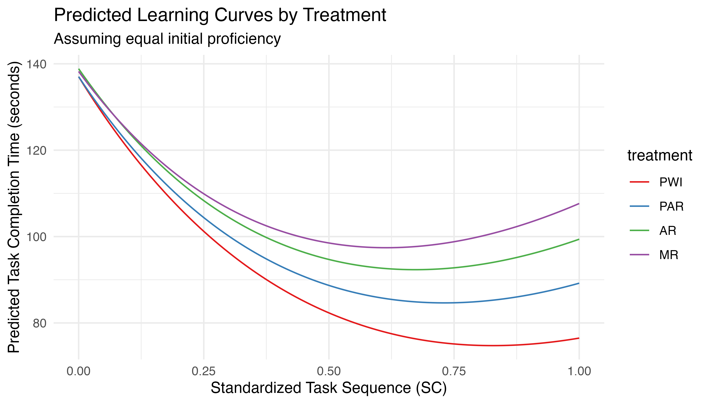
This plot shows that, even when the effects of \(TCT_{0}\) are standardized, the instructional method influences the learning rate. To quantify this effect, emtrends from the emmeans package is used to calculate the rate of change in the response variable with respect to specified predictors. In the context of this analysis, it is used to calculate the slope of TCT with respect to sequence for each treatment while holding \(TCT_{0}\) constant. Pairwise comparisons of the resulting slopes allow for statistical tests, as seen in Table 5.14. These results show significant differences between the learning rates for PWI and both AR (p = 0.007) and MR (p < 0.001) as well as PAR and MR (p = 0.04). The overall ranking of effectiveness can be expressed as PWI ≈ PAR, PWI > (AR ≈ MR), and PAR > MR.
contrast estimate SE df z.ratio p.value
PWI - PAR -12.71 5.40 Inf -2.355 0.0861
PWI - AR -21.05 6.51 Inf -3.233 0.0067
PWI - MR -29.95 6.53 Inf -4.588 <.0001
PAR - AR -8.35 6.48 Inf -1.289 0.5701
PAR - MR -17.25 6.52 Inf -2.643 0.0409
AR - MR -8.90 6.62 Inf -1.343 0.5351
P value adjustment: tukey method for comparing a family of 4 estimates While Figure 5.17 clearly illustrates the differences in learning curves, and Table 5.14 provides compelling statistical evidence of these effects, both approaches focus on absolute changes in task completion time. As a complementary perspective, Figure 5.18 expresses progress as cumulative percentage improvements. This approach offers some advantages:
- It allows for comparison of relative progress across treatments, which can be informative when participants start at different performance levels.
- Percentage improvements can sometimes highlight subtle differences in learning patterns that are less apparent in absolute time measures.
- It provides a way to visualize learning gains that is independent of the scale of the original task completion times.
While the result may appear similar to the inverse of earlier plots, it offers a standardized view of learning progress across treatments that aligns closely with how learning is often conceptualized in cognitive and educational theories. This representation helps confirm and clarify the trends observed in our previous analyses, reinforcing our understanding of how each treatment impacts learning over time.
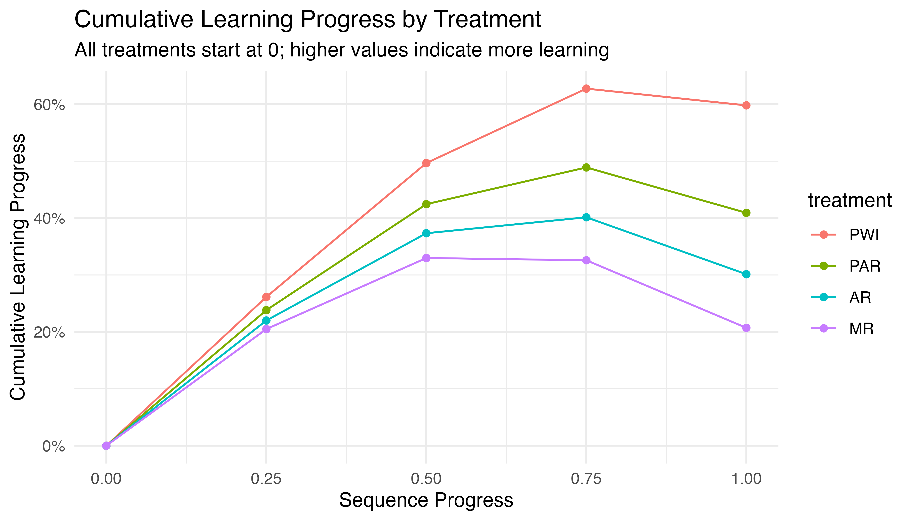
5.3.4.4 \(H_{1b}\) Results
Based on comprehensive analysis of learning curves and statistical modeling, there is strong evidence to accept \(H_{1b}\): the rate of improvement in task completion time varies significantly by treatment. Specifically, PWI demonstrates the steepest learning curve, followed closely by PAR. Both AR and MR show slower rates of improvement. The relationship can be summarized as: PWI ≈ PAR, PWI > (AR ≈ MR), and PAR > MR. This pattern holds true even when controlling for initial task completion time, suggesting that the treatment effects on learning rates are robust. The differences in learning rates are most pronounced in the early stages of task repetition and tend to converge over time, highlighting the importance of instructional method particularly in the initial phases of skill acquisition. However, these findings should be interpreted with the described limitations in mind, primarily those related to the limited extrapolation capabilities resulting from an imbalanced data set and statistical model formulation. In light of these considerations, great effort was invested to ensure the robust and reliable findings outlined above.
5.3.5 \(H_{1c}\): Average Error Count per Car
The third and final hypothesis of the learning phase tests the third commonly assessed aspect of learning: \[H_{1c}\textrm{: Average error count per car varies with treatment}\]
Here again, we are interested in finding statistically significant differences in the average error count under different treatment conditions to identify which instructional method leads to the lowest defect rate. Lower error rates can indicate a higher quality of learning outcomes. Combined with the previous measures of efficiency (TCT) and learning rate (change in TCT per task), these provide a balanced and comprehensive view of training performance.
5.3.5.1 Descriptive Statistics
As with previous measures, the uncorrected error count (UCE) is neither independent nor balanced. Additionally, it is a discrete (counted) variable. All of these have implications for the statistical method used, but where average counts are used, many are addressed. The standard five number summary for UCE is presented in Table 5.15.
| Mean | SD | Min | Median | Max | |
|---|---|---|---|---|---|
| Average Uncorrected Errors | 2.19 | 3.15 | 0.00 | 0.33 | 12.00 |
As this data is aggregated by participant, there is only one observation for each (\(n\) = 53). As is common in this study, variation is high (SD = 3.15) compared to the mean value (2.19). Many participants made no errors, but one averaged 12 errors per task iteration, resulting in an overall median value of 0.33. The distribution of UCE is illustrated by Figure 5.19. As seen before, the overall average error count data exhibits floor effects that contribute to a strongly positive skew. Obvious non-normality (Shapiro-Wilk, p < 0.001), skew (D’Agostino, p < 0.001), and kurtosis (Anscombe-Glynn, p = 0.02) are all confirmed in the overall dataset using the appropriate tests.
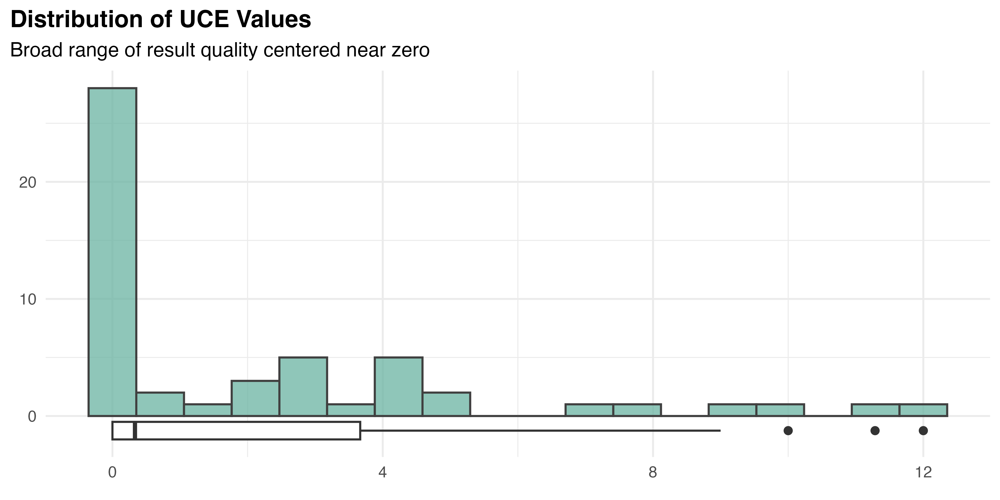
Finally, Shapiro-Wilk tests are performed for each treatment group, revealing strong evidence that PAR (p < 0.001), AR (p < 0.001), and MR (p < 0.001) are not normally distributed, but PWI is (p = 0.61). These findings are supported by the Q–Q plots in Figure 5.20. Furthermore, it is important to note that this is counted data. Despite the fact that means / grand means may appear continuous in this aggregated form, the underlying distribution remains discrete. Traditional parametric tests are not recommended in this case.
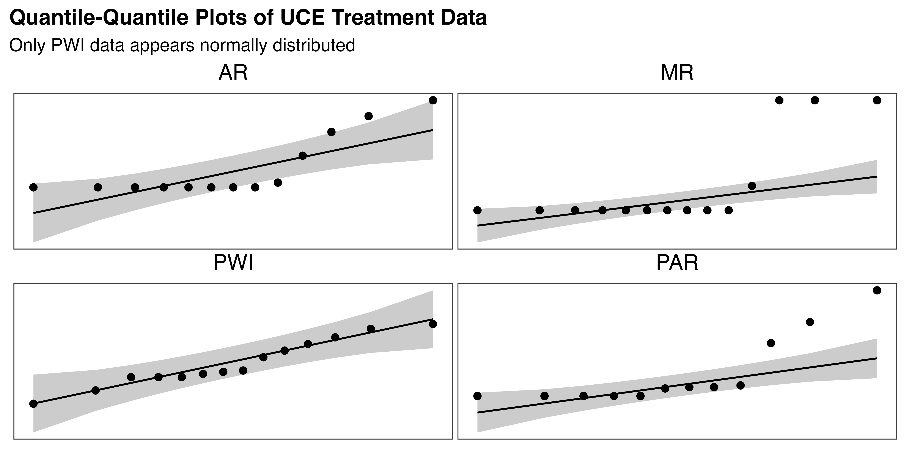
5.3.5.2 Analysis
The Kruskal-Wallis non-parametric test is used to compare average UCE by treatment, the results of which are shown in Figure 5.21. Large differences in the overall mean are observed, along with some floor effects in the augmented treatments. The test statistic \(\chi^{2}_{KW}(3)=25.5\), with a p-value < 0.001, indicates a statistically significant difference between groups. The effect is \(\hat{\epsilon}^{2}_{rank}=0.49\), with a \(CI_{95\%}\:[0.32,1.00]\), reflecting the data’s variability. The results of Dunn’s Holm-adjusted pairwise comparisons show statistically significant differences between PWI and all other treatments (p << 0.01 in all cases), while PAR, AR, and MR treatments are statistically similar. These results formally quantify the obvious reduction in error count experienced with any form of augmented instruction.
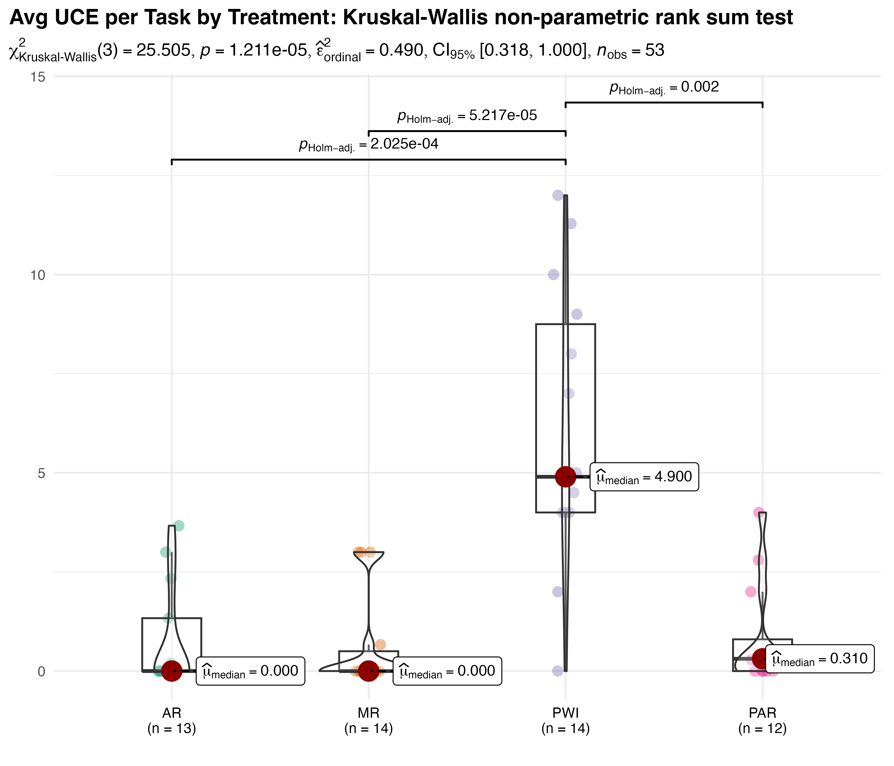
KW is a robust test that does not assume normality or homogeneity of variances. It can be sensitive to the presence of outliers, three of which were detected in the UCE data based on a combination of IQR and Z-score. Participants 1016, 1017, and 1056 were all assigned to the PWI treatment and averaged 12, 10, and 11.3 errors per task, respectively. A second Kruskal-Wallis test of the data without those outliers showed the difference remained significant (p < 0.001). This confirms that the outliers did not impacting the outcome of the test.
5.3.5.3 \(H_{1c}\) Results
\(H_{1c}\) is accepted - all augmented instruction methods result in error rates that are drastically lower in magnitude than PWI, the statistical significance of which is confirmed. Floor effects may imply that the task complexity was insufficent to capture the full range of participant performance. Further analysis using a generalized linear mixed model with poisson or negative binomial distribution for count data could be used to better account for participant variation but that seems unnecessary given the strong observed differences. While this method was deemed insufficient for capturing the nuances of learning rate analysis, it is entirely appropriate for comparing average error counts.
5.4 \(H_2\): Recall Phase Analysis
As with the learning phase results, only completed tasks are considered for recall analysis. Paper work instructions were available for reference, and participants wore the HL2 only for recording purposes. This almost entirely eliminated system-related interruptions, though participant 1057 inadvertently triggered the HL2 menu twice during their trial. The time lost to those events was deducted from measured task times as before. 212 observations were recorded during this phase, as expected for 53 participants, each with four iterations.3
5.4.1 \(H_{2a}\): Overall Equipment Effectiveness
The first hypothesis of the recall phase: \[H_{2a}\textrm{: OEE varies with treatment}\]
is designed to determine if the instructional method has an impact on overall performance after the initial training period. As described in Section 4.3.1.3, OEE is the product of performance (task rate relative to takt time), quality (percentage of units produced without defects), and availability (percentage of system up time). For the purposes of this analysis, 100% availability is assumed. Takt time is set to 60 seconds in accordance with the line policy and instructional design.
5.4.1.1 Descriptive Statistics
The calculated measures are summarized below:
- Productivity: n = 53, Mean = 0.84, SD = 0.19, Median = 0.82, MAD = 0.18, range: [0.41, 1.47], Skewness = 0.20, Kurtosis = 1.28
- Quality: n = 53, Mean = 0.56, SD = 0.49, Median = 1.00, MAD = 0.00, range: [0, 1], Skewness = -0.25, Kurtosis = -1.96
- Overall Equipment Effectiveness: n = 53, Mean = 0.48, SD = 0.43, Median = 0.62, MAD = 0.58, range: [0, 1.14], Skewness = -0.07, Kurtosis = -1.77
As this is aggregated data, there is one observation for each participant, and no missing values. Productivity and quality are slightly skewed right (0.20) and left (-0.25), respectively. Kurtosis measures suggest that productivity is close to normal (1.28), but quality has a flatter distribution (-1.96). Productivity exhibits relatively low variability and similar mean (0.84) and median (0.82), suggesting consistency among participants. For quality, the median (1.00) and its absolute deviation (MAD = 0.00) show that many participants achieved perfect quality during recall. However, the range (0, 1) and high standard deviation (0.49) relative to its mean (0.56) indicates considerable variability. In fact, several participants produced only defective assemblies. Note that quality is essentially a discrete variable, as it can only take on values of \(n/4\), where \(n = 0, 1, \dots, 4\), corresponding to each of the four task iterations.
OEE shows a notably asymmetric distribution with a mean of 0.48 and a higher median of 0.62, indicating a significant number of low values dragging down the mean. A high concentration of zeros are observed in the OEE histogram, Figure 5.22, suggesting that many participants experience zero effectiveness due to high defect rates. The standard deviation (sd = 0.43) and median absolute deviation (MAD = 0.58) reflect substantial variability in effectiveness across participants. Despite the approximately symmetric skewness (-0.07), the range (0 to 1.14) indicates diverse levels of effectiveness, from complete failures to high performance. These findings highlight the variability in participants’ abilities to achieve consistent and effective output.
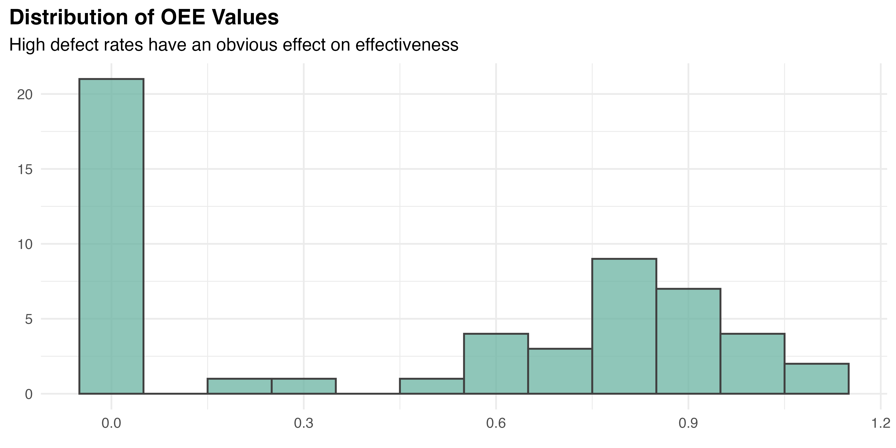
Results from the Shapiro-Wilk test provide further evidence against the normality hypothesis for OEE, both overall (p < 0.001) and by treatment (p < 0.05 in all cases). Q-Q plots in Figure 5.23 suggest that OEE is close to normally distributed for all augmented treatments, but PWI is clearly not. No outliers were detected in the OEE data based on the Z-score test. Finally, Levene’s test indicated no significant heterogeneity of variance between treatment groups (p = 0.43). These findings again dictate a non-parametric approach to testing \(H_{2a}\).
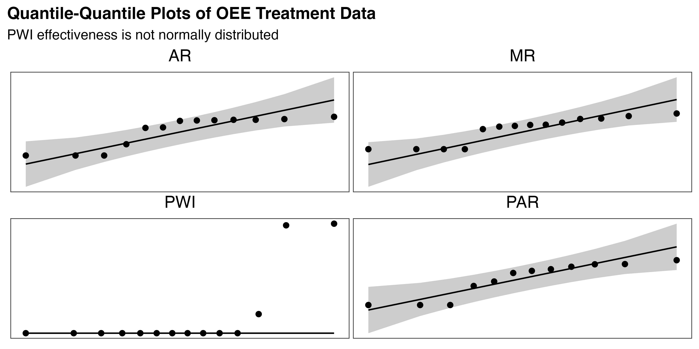
5.4.1.2 Analysis
In Figure 5.24, group-wise significant differences are found (p = 0.02), with with small to moderate effect size \(\hat{\epsilon}^{2}_{rank}=0.19\) and a broad \(CI_{95\%}\:[0.08,1.0]\). Pair-wise tests show only PWI and PAR are significantly different (also p = 0.02). A post-hoc simulation was performed to assess the power of the analysis. The result of 85.6% indicates the analysis had sufficient power to detect significant differences, which lends further support to the reliability of this outcome.
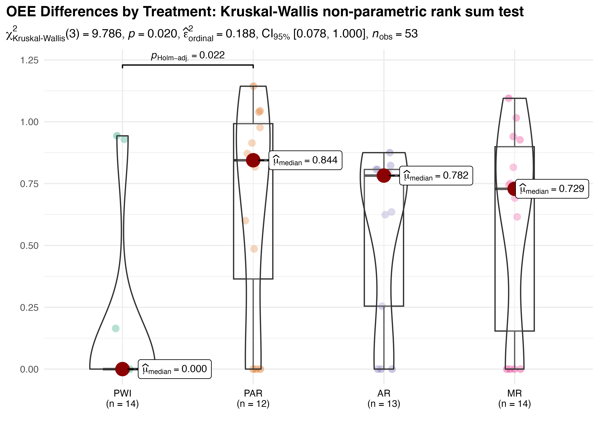
This unexpected result indicates that, despite substantial observed differences, the PWI, AR, and MR treatments have statistically equivalent OEE. High within-group variability likely contributes to this finding by obscuring genuine differences in group means. Kruskal-Wallis test is somewhat vulnerable to this effect due to its rank-based design and underlying assumptions. The ratio of interquartile range to overall range for PAR (0.55), AR (0.63), and MR (0.68) show that the central 50% of observations in these treatments is spread over more than half of its overall range. This wide variation is easily observed in the box plots of Figure 5.24.
To further investigate the observed variability and validate these unexpected findings, bootstrap resampling analysis was employed. This flexible technique samples with replacement to construct robust estimates of the distribution for the statistics of interest (e.g., mean or median) and their confidence intervals. Bootstrapping relies on the empirical distribution of the data to accurately capture variability with few assumptions. Additionally, the replication process effectively increases the sample size and statistical power of the analysis, enhancing the accuracy and reliability of its results.
A bootstrap analysis was used to estimate pairwise differences in three measures of centrality for OEE–mean, median, and the Hodges-Lehmann estimator. The latter is a non-parametric approach to estimate population median shifts that is robust to outliers. It provides a consistent estimate of the true shift in medians, even when the underlying distributions are dissimilar, by considering the differences between all possible observation pairs. This process was replicated five times, each with 10,000 resamples, and the results were averaged to determine grand means and related statistics. The significant results of this complementary analysis, where the 95% confidence interval does not include zero, are tabulated in Table 5.16.
| Significant OEE Differences in Centrality: Bootstrapped Estimates | |||||
| Five Replications of 10,000 Resamples for Mean, Median, and the Hodges-Lehmann Estimator | |||||
| Comparison | Stat | Mean | 95% CI | Bias | Std Error |
|---|---|---|---|---|---|
| PWI - PAR | Mean | −0.512 | [−0.792, −0.204] | −0.001 (0.000) | 0.149 (0.000) |
| PWI - AR | Mean | −0.408 | [−0.643, −0.140] | −0.001 (0.000) | 0.128 (0.000) |
| PWI - MR | Mean | −0.448 | [−0.700, −0.167] | −0.001 (0.000) | 0.136 (0.000) |
| PWI - PAR | Median | −0.844 | [−1.008, −0.243] | 0.075 (0.000) | 0.194 (0.000) |
| PWI - AR | Median | −0.782 | [−0.807, −0.255] | 0.088 (0.000) | 0.167 (0.000) |
| PWI - PAR | HL_Est | −0.704 | [−0.955, −0.271] | 0.047 (0.000) | 0.185 (0.000) |
| PWI - AR | HL_Est | −0.565 | [−0.798, −0.232] | 0.022 (0.000) | 0.170 (0.000) |
| PWI - MR | HL_Est | −0.664 | [−0.842, −0.238] | 0.065 (0.000) | 0.170 (0.000) |
| Significance indicated by confidence intervals that do not include zero. | |||||
Compared to the initial findings, bootstrapping identifies a number of significant pairwise differences. Even when testing OEE median values, as done with Kruskal-Wallis, this method finds both PWI-PAR and PWI-AR significant. The mean tests, which are more sensitive to variance and outliers, also include PWI-MR. Hodges-Lehmann matches the mean findings, despite its reduced sensitivity.
This result supports the previous findings of significant overall differences in OEE, as well as between the PWI and PAR conditions for all measures of centrality. In addition, the bootstrap analysis, with its robust estimation methods, provided strong evidence of significant differences between PWI and both the AR (for all measures) and MR groups (except for median). These results show that the OEE of PWI is substantially lower than all other treatments, with average estimated differences of 0.687 (PAR), 0.585 (AR), and 0.307 (MR). The negligible bias values and low standard error reported across all replicates reinforce the reliability of these findings.
5.4.1.3 \(H_{2a}\) Result
As both approaches identified a significant treatment effect on OEE, there is ample evidence to accept \(H_{2a}\): OEE does vary with instructional method. However, the conflicting pairwise analysis results must be reconciled. While the Kruskal-Wallis test only identified significant differences between the PWI and PAR treatments, subsequent bootstrapped analysis revealed additional differences between PWI and the AR and MR treatments using a variety of measures. Considering the bootstrap method’s advantages when faced with high between-group variance, limited sample size, and non-normally distributed data, the consistent differences and robust confidence intervals it produced provide compelling evidence that the observed differences are reliable. Ultimately, it is determined that PAR, AR, and MR treatments all result in statistically significant and practically meaningful improvements in OEE compared to PWI, which was hampered by a high defect rate.
5.4.2 \(H_{2b}\): Paper Work Instruction References
The second hypothesis of the recall phase assesses an alternative measure of training effectiveness: \[H_{2b}\textrm{: PWI reliance varies with treatment}\]
Reliance is quantified by the number of times each participant refers to the paper work instructions (PWI count), and the duration of each event (PWI time). PWI count is considered a measure of the frequency of the participant’s task uncertainty, while PWI time is associated with the degree of uncertainty experienced.
5.4.2.1 Descriptive Statistics
Overall statistics for the measures of interest (n = 212) are summarized below:
- PWI Count per Task: Mean = 1.47, SD = 4.12, Median = 0.00, MAD = 0.00, range: [0, 30], Skewness = 4.51, Kurtosis = 23.27, 0% missing
- Total PWI Time per Task: Mean = 2.86, SD = 9.43, Median = 0.00, MAD = 0.00, range: [0, 77.18], Skewness = 5.64, Kurtosis = 36.73, 0% missing
Despite low mean values for count and total time (1.47 and 2.86, respectively), both exhibit substantial variability, with standard deviations of 4.12 and 9.43. High skewness (4.51 for count, 5.64 for time) and kurtosis (23.27, 36.73) confirm their strong right skew and heavy tails. Together with a median and MAD of zero for both measures, these statistics suggest that many participants rarely referred to the instructions, but a small number relied on them heavily.
The statistical similarity between count and time suggests a high correlation, confirmed by Spearman’s rank correlation test (rho = 0.99, p < 0.001). This is natural and expected for two dependent measures, but must be accounted for. To create a stable measure of overall reliance for each participant, a composite measure was created by averaging the time per PWI reference across all four tasks. This approach reduces the impact of task-specific factors and eliminates the correlation between reference count and duration without diminishing either aspect of task uncertainty. Using a single, composite measure simplifies the analysis and interpretation of the results by reducing dimensionality. It also enables a traditional univariate approach to the comparison, which benefits from reductions to both within– and between–participant variance due to averaging. The distribution of average time per PWI reference is visualized in Figure 5.25.
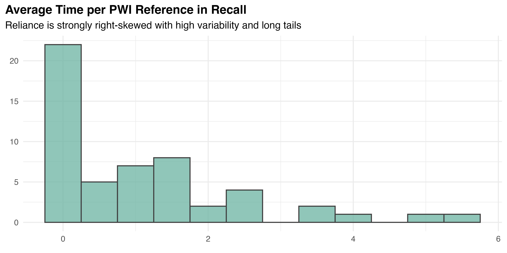
From the descriptive statistics and visualization, this data does not appear normal. To confirm, the Shapiro-Wilk test was administered for the overall data (p < 0.001) and within each treatment group. The results show that neither PWI (p < 0.001) nor PAR (p < 0.001) are normally distributed, but AR is (p = 0.16), and MR shows marginal evidence (p = 0.05) of non-normality. Visual inspection of the Q-Q plots for each treatment, provided in Figure 5.26, supports these findings. Levene’s test (p = 0.95) confirms equal variance by treatment.
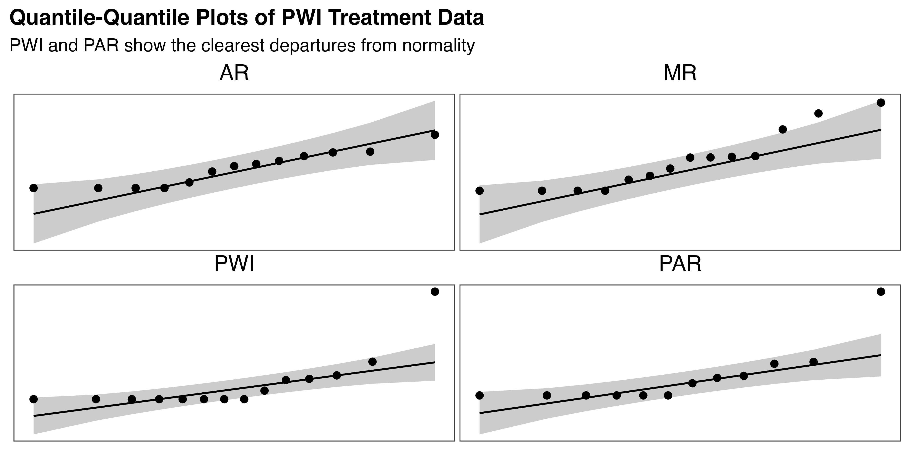
Outliers were identified within each treatment group for all measures of task uncertainty. Data for five participants with Z-scores of 2.5 or higher are summarized in Table 5.17. These participants were removed from the primary analysis to ensure the data represents typical participant behavior and to maintain the integrity of the comparative analysis.4
| |Z-scores| for Reliance Metrics of Participant Outliers | ||||
| Participants with |Z-score| >= 2.5 in reliance components | ||||
| Participant | Treatment | Count | Time | Reliance |
|---|---|---|---|---|
| 1021 | PAR | 2.74 | 1.67 | 0.51 |
| 1028 | PAR | 0.87 | 2.50 | 2.87 |
| 1031 | PWI | 0.89 | 2.98 | 3.16 |
| 1045 | PWI | 3.08 | 1.43 | 0.28 |
| 1053 | AR | 3.11 | 2.86 | 0.27 |
Several checks were then repeated to assess the impact of outlier removal. The Shapiro-Wilk test showed no change in significance for data overall or by treatment group. While Levene’s test found significant difference in variance between groups (p = 0.01) after the change, Kruskall-Wallis does not assume otherwise. A Wilcoxon signed-rank test was applied to compare overall and group means with and without outliers. No significant differences were found in average PWI time per reference in the the full data set or by treatment group (p > 0.40 for all cases). It is determined that, despite a reduction in the overall mean value from 1.08 to 0.87, the character of the underlying data is not significantly changed by the outlier removal. Given that most treatments are not normally distributed, and variance differs between groups, a non-parametric approach is chosen for testing \(H_{2b}\). The total number of observations (n = 48) and group sizes (12 PWI, 10 PAR, 12 AR, and 14 MR) remain sufficient for these methods, though statistical power is reduced.
5.4.2.2 Analysis
Per Figure 5.27, despite a nominal p-value (0.05) the Kruskal-Wallis test fails to identify significant between-group differences for the average PWI reference duration. A small effect size \(\hat{\epsilon}^{2}_{rank}=0.17\) with broad \(CI_{95\%}\:[0.07,1.0]\), along with a post-hoc power simulation (80.3%) all support this result.
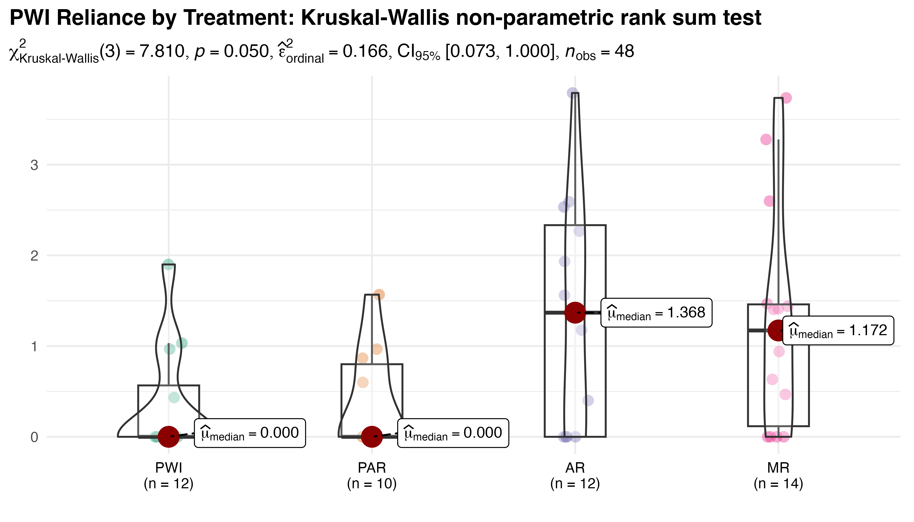
Given the marginal p-value and high variance data, bootstrap analysis was again performed to provide complementary insights. As before, five replications of 10,000 resamples were conducted for all pairs using mean, median, and the Hodges-Lehmann estimator. Significant results are summarized in Table 5.18. As with the Kurskal-Wallis test, no significant differences were identified using median, but the mean and Hodges-Lehmann estimator both identified 95% CI based differences in PWI-AR, PWI-MR, and PAR-AR pairs. A significant difference in mean was also indicated for PAR-MR.
| Significant Reliance Differences in Centrality: Bootstrapped Estimates | |||||
| Five Replications of 10,000 Resamples for Mean, Median, and the Hodges-Lehmann Estimator | |||||
| Comparison | Stat | Mean | 95% CI | Bias | Std Error |
|---|---|---|---|---|---|
| PWI - AR | Mean | −0.993 | [−1.776, −0.223] | 0.000 (0.000) | 0.397 (0.000) |
| PWI - MR | Mean | −0.880 | [−1.622, −0.196] | −0.007 (0.000) | 0.362 (0.000) |
| PAR - AR | Mean | −0.954 | [−1.748, −0.170] | −0.002 (0.000) | 0.401 (0.000) |
| PAR - MR | Mean | −0.841 | [−1.577, −0.171] | −0.008 (0.000) | 0.358 (0.000) |
| PWI - AR | HL_Est | −1.064 | [−1.933, −0.105] | −0.013 (0.000) | 0.477 (0.000) |
| PWI - MR | HL_Est | −0.956 | [−1.816, −0.117] | 0.042 (0.000) | 0.445 (0.000) |
| PAR - AR | HL_Est | −0.847 | [−1.933, −0.005] | −0.166 (0.000) | 0.499 (0.000) |
| Significance indicated by confidence intervals that do not include zero. | |||||
On average, AR and MR reduce reliance by 0.686 and 0.612 seconds per reference, respectively, relative to the PWI instructional method. This finding is statistically and practically meaningful, given that the overall average reference duration is 0.87 seconds. In summary, the bootstrap analysis suggests that AR and MR are equivalent to one another but reduce reliance more than PAR and PWI, which are themselves equivalent. The negligible bias values and low standard error reported across all replicates once again reinforce the stability of those estimates.
5.4.2.3 \(H_{2b}\) Result
The marginal p-value returned by the Kruskall-Wallis comparison of median reliance, together with consistent and robust estimates of the differences provided by bootstrap analysis give sufficient evidence to accept \(H_{2b}\): reliance does vary with instructional method. However, the conflicting results of pairwise comparisons must be interpreted with caution. Like other results in this study, they suggest that AR/MR are superior to PWI/PAR but the limited data and high variation make this somewhat inconclusive. Ultimately, it is determined that statistically significant differences in reliance exist between treatments, but specific pair-wise differences are not clear enough to declare.
5.5 \(H_3\): Retention Phase Analysis
The final phase of this study is designed to test the durability of the training received. Twenty-four participants volunteered to return to the lab on April 29th to complete the assembly task one last time, without further instruction. All participants were asked to complete the task correctly, quickly, accurately, and entirely from memory. Though a target time of 60 seconds was established, each participant was given the time they needed to declare their effort complete, with a hard stop at 3 minutes5.
5.5.1 \(H_{3}\): Change in TCT and UCE since Recall
The one hypothesis tested during the retention phase: \[H_{3}\textrm{: Learning retention varies with treatment}\]
is designed to determine if the instructional methods have an impact on the durability of training for up to two months.
When originally planned, this analysis would utilize the change in OEE from recall to retention. It was later realized that the way in which OEE assesses task quality as pass / fail based on a single defect is problematic. Each participant only performed one replication of the retention task, where errors are expected. However, minor errors may not indicate a complete lack of retention. The combination of these factors leads to unstable binary outcomes that make it impractical to draw reliable conclusions about retention when using OEE. Instead, retention is assessed by studying the relationships between treatment and gap (the number of days since the original training), and the increase in TCT and UCE during that time. These are treated as \(H_{3a}\) and \(H_{3b}\) for the increases in TCT and UCE, respectively.
5.5.1.1 Descriptive Statistics
Each of the 24 participants completed one task, for which the two measures were observed. The four treatments were relatively evenly represented (8 PWI, 5 PAR, 6 AR, and 5 MR) and the gap between recall and retention ranged from 3 to 44 days (mean 21.58, SD 13.06, median 20.5). Table 5.19 summarizes the descriptive statistics for TCT, UCE, and their increases.
| Mean | SD | Min | Median | Max | |
|---|---|---|---|---|---|
| Task Completion Time (s) | 101.88 | 28.10 | 55.00 | 106.50 | 154.00 |
| Uncorrected Errors (n) | 6.38 | 4.45 | 0.00 | 7.50 | 14.00 |
| Increase in TCT (s) | 33.25 | 27.91 | −12.65 | 30.67 | 107.22 |
| Increase in UCE (n) | 4.60 | 4.78 | 0.00 | 3.75 | 14.00 |
A variety of measures were considered to establish the baseline of performance during recall, including the mean, weighted average, 75th percentile, average of last two tasks, and last value for TCT and UCE. Ultimately, it was decided that an average of TCT / UCE over the last two task results was the most suitable measure of “typical” performance. Given the limited number of replications during recall, this approach balances recency with stability, reflecting the most recent performance trends while limiting the influence of a single result.
As seen in Figure 5.28, the median increases in TCT appear similar across all treatments, with PWI and AR slightly higher than PAR and MR. Considerable variation exists within each treatment group, with MR exhibiting the most consistent values, while PWI and AR have greater variability and potential outliers. The increase in UCE is more clearly differentiated by treatment, with median steadily decreasing from AR to PAR, PWI, and MR. Variance is similar in the PWI-PAR and AR-MR pairs, with PWI and PAR both exhibiting significantly less than AR and MR. The overlapping IQR of increase in TCT suggests a lack of significant treatment effect. Overlap is less prominent in UCE increase, giving some evidence of treatment effect. Note that positive increases were consistent for both TCT and UCE. The lone exception is the increase in UCE for MR, with a median of zero.
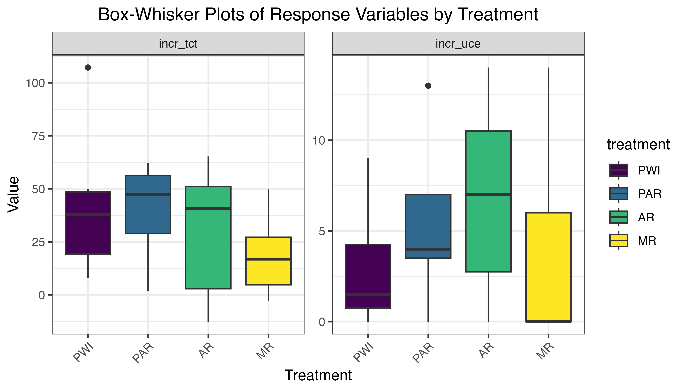
5.5.1.2 Check Model Assumptions
The observed values for the increase in TCT (iTCT) and UCE (iUCE) are all independent. Each response will be analyzed separately, as a function of treatment and gap. A simple comparison of means like Kruskal-Wallis is insufficient for two predictors, and model-based methods are required. When testing continuous variables like iTCT, a linear regression model (LM) of the form iTCT ~ treatment +/* gap is appropriate. iUCE, on the other hand, is a discrete variable (error count) with insufficient sample size to approximate a normal distribution. A generalized linear model (GLM) with similar form and Poisson or Negative Binomial distribution is commonly used in this situation.
The assumptions of a GLM, including linearity, mean-variance relationship, and zero-inflation, are assessed after fitting the model. Meanwhile, to confirm the iTCT data meets the normal requirements of a LM, normality, homoscedasticity, and linearity must be checked. A Shapiro-Wilk test suggests the data is normal overall (p = 0.30) and within treatment groups (p >= 0.109 for all). The Q-Q plots of Figure 5.29 fail to provide strong counter-evidence, validating the normality requirement. Furthermore, the Levene test finds no evidence of heteroscedasticity (p = 0.77).
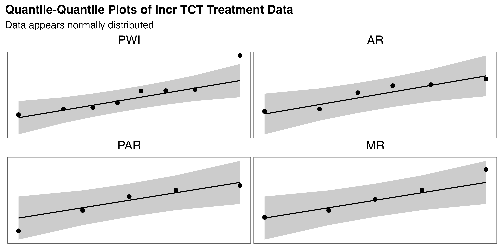
To test the linearity assumption, a graph of iTCT vs gap was constructed for each treatment. The scatter plots in Figure 5.30 show some support for linearity, though the limited data makes it difficult to judge. Additional evidence may come from the model residual plots. Until then, this is sufficient. In summary, the model assumptions are met: iTCT is continuous and linear, with independent observations, and all treatment groups are normal, with homogeneous variance.
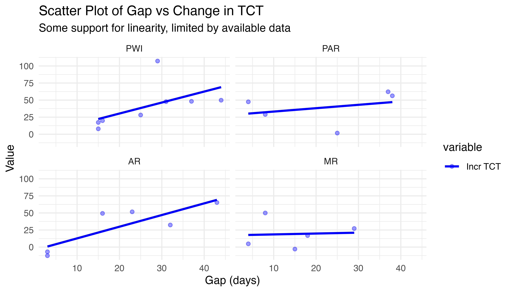
As a final step prior to analysis, both iTCT and iUCE are tested for outliers using a combination of Z-score, IQR, and multivariate (Mahalanobis Distance) methods. None were detected by any test.
5.5.1.3 \(H_{3a}\): Increase in TCT vs Gap and Treatment
To begin assessing the effect of instructional method on retention, the relationship between iTCT and gap, visualized in Figure 5.31, is considered. A pair of linear regression models (LMs) were fit, both using iTCT as the response, with gap and treatment as predictors. One specified additive terms and the other included interactions between gap and treatment.
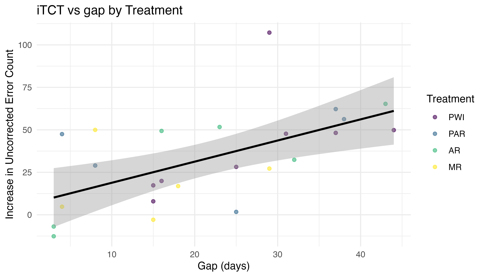
A comparison of model performance statistics are summarized in Table 5.20. Columns for the model name and type are followed by AIC, BIC, and their corresponding weights, standard and adjusted R-squared (\(R^2\)), and the Root Mean Squared Error (RMSE). AIC/BIC weights represent the relative likelihood of each model being the most accurate of those considered.
| Name | Model | AIC (weights) | BIC (weights) | R2 | R2 (adj.) | RMSE |
|---|---|---|---|---|---|---|
| m1_tct_add | lm | 228.3 (0.81) | 235.3 (0.96) | 0.36 | 0.22 | 21.90 |
| m2_tct_int | lm | 231.2 (0.19) | 241.8 (0.04) | 0.44 | 0.19 | 20.53 |
In this comparison, both AIC and BIC strongly prefer the additive model. While the \(R^2\) of the model with interactions is higher, the additive model scores a higher \(R^{2}_{adj}\)., where complexity is penalized. Despite a slightly higher RMSE, the additive model outperforms based on the principle of parsimony, which favors the least complex model that effectively explains the data. Details for the additive model are summarized in Table 5.21. The intercept represents the mean iTCT for the reference treatment (AR), with a gap of zero. The treatment coefficients (MR, PAR, PWI) indicate the difference in mean iTCT between each treatment and AR, assuming the same gap value. Since there are no interaction terms in the model, the effect of gap on iTCT is constant across all treatments.
| Parameter | Est Coef | SE | 95% CI | t(19) | p | Sig |
|---|---|---|---|---|---|---|
| (Intercept) | 6.587 | 13.059 | (-20.75, 33.92) | 0.504 | 0.6198 | |
| gap | 1.163 | 0.417 | (0.29, 2.04) | 2.788 | 0.0117 | * |
| treatmentMR | -4.625 | 15.059 | (-36.14, 26.89) | -0.307 | 0.7621 | |
| treatmentPAR | 6.692 | 14.935 | (-24.57, 37.95) | 0.448 | 0.6592 | |
| treatmentPWI | 3.377 | 13.564 | (-25.01, 31.77) | 0.249 | 0.8061 |
Only the gap predictor is statistically significant, with an estimated coefficient of 1.163 (p = 0.0117), indicating that iTCT increases with gap at a rate of approximately 1.16 seconds per day, which is practically significant. The coefficients for the treatment levels are not statistically significant, which implies that the observed differences in iTCT between the treatments may not be robust or replicable. This result must be interpreted with care, as the overall model fit is marginal. Gap and treatment together account for only about 36% of the variance in iTCT (\(R^2\) = 0.358 and adjusted \(R^2 = 0.222\)). The p-value for the F-statistic of 2.645 on 4 and 19 degrees of freedom is 0.0656. At the conventional threshold of 0.05, this fails to reject the null hypothesis that all regression coefficients except the intercept are zero. Together, these results provide only limited evidence that the predictors collectively contribute to explaining the variability in iTCT, with gap making the only significant contribution. Further validation with a larger sample size and additional diagnostics would be prudent to confirm these findings and ensure robustness.
To validate this model a number of checks were performed. A Shapiro-Wilk test indicates residuals are normally distributed (p = 0.08). The Q-Q plot of the residuals in Figure 5.32 shows most points are on or near the reference line, despite some deviance in the right tail. The second plot in the figure shows the residuals are scattered randomly around the axis without clear curvature or other systematic deviations. This provides good support for the LM’s linearity assumption within the limits of the available data. The variance inflation values for gap (1.06) and treatment (1.02) are both near 1, indicating very low multicollinearity. These results confirm the model is valid.
For confidence bands, please install `qqplotr`.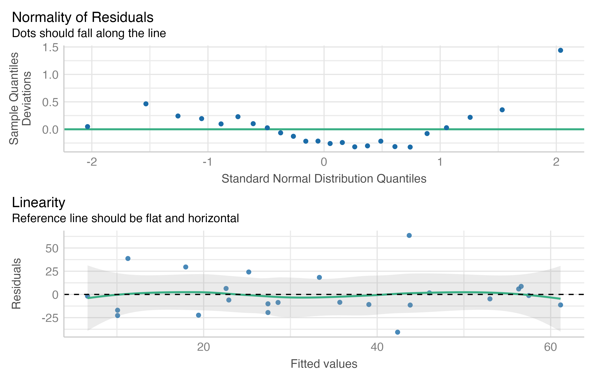
5.5.1.4 \(H_{3b}\): Gap and Treatment vs Incr UCE
Continuing the analysis of \(H_{3}\), the second measure of learning retention, iUCE, is tested. A pair of generalized linear models were fit using a Poisson distribution. As before, gap and treatment were the predictors, and iUCE the response. One model includes only the main effects of the predictors, while the other also include their interactions. The relationship between iUCE and gap is visualized in Figure 5.33, which includes a linear regression with confidence intervals for the full dataset.
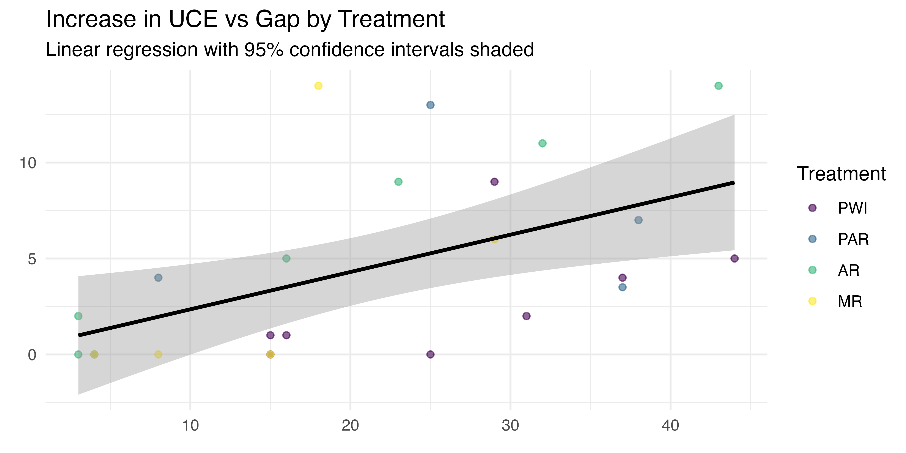
Because the Poisson distribution is used to model count data, it requires all non-negative integer values for the response variable. Since iUCE was measured from the average of the last two values during recall, some non-integer observations are included. To correct for this without altering the relative differences between observations, iUCE was doubled prior to the model fit. When interpreting the model results, the coefficients and other estimates will be on the scale of the doubled iUCE and should be halved to interpret them on the original scale.
| Name | Model | AIC (weights) | BIC (weights) | Nagelkerke’s R2 | RMSE |
|---|---|---|---|---|---|
| m1_uce_poisson | glm | 226.6 (0.21) | 232.5 (0.61) | 0.99 | 7.05 |
| m2_uce_poisson | glm | 223.9 (0.79) | 233.3 (0.39) | 0.99 | 6.92 |
A comparison of model performance statistics are summarized in Table 5.22. The columns for AIC, BIC, and RMSE are as previously described. The standard and adjusted \(R^2\) terms are replaced with Nagelkerke’s \(R^2\). This is the equivalent measure for GLMs with count data outcomes, and is interpreted in the same manner. The second model includes interactions of gap and treatment. It performs better on AIC, BIC, and RMSE metrics, and has the same \(R^2\) value, indicating that the additional model complexity provides a substantially better fit.
Despite these results, post-hoc validation steps reveal conflicts with the model assumptions. Dispersion is measured at 9.04 (p < 0.001), which is both substantially larger than 1.0 and statistically significant. This indicates overdispersion, a condition where the observed variance is greater than that predicted by the model. A second test found that zero inflation is present (p = 0.048), indicating that the count of zero values in the data is greater than the model expects. Both violate the assumptions of the Poisson-based model, and prompt the switch to the Negative Binomial (NB) distribution, which accounts for overdispersion. Based on these findings, Zero-Inflated Negative Binomal (ZINB) equivalents are included for comparison.
| Name | Model | AIC (weights) | BIC (weights) | RMSE |
|---|---|---|---|---|
| m1_uce_nb_add | negbin | 155.0 (0.03) | 162.1 (0.09) | 10.06 |
| m2_uce_nb_int | negbin | 157.7 (8.00e-03) | 168.3 (4.00e-03) | 19.09 |
| m3_uce_zinb_add | zeroinfl | 149.6 (0.44) | 157.9 (0.75) | 7.54 |
| m4_uce_zinb_int | zeroinfl | 149.3 (0.52) | 161.1 (0.15) | 16.80 |
As seen in Table 5.23, both ZINB options (model 3 and 4) strongly outperform the NB alternatives in terms of AIC and BIC. While model 4 (with predictor interactions) has a slightly lower AIC, the main effects version (model 3) shows substantially better BIC and RMSE. Based on this, the additive ZINB model, which provides the best balance of model complexity, fit, and predictive power, is selected.
| Parameter | Est Coef | SE | 95% CI | z | p | Sig | Adj Coef |
|---|---|---|---|---|---|---|---|
| (Intercept) | 6.709 | 2.875 | (2.90, 15.54) | 4.441 | < 0.001 | *** | 3.354 |
| gap | 1.033 | 0.014 | (1.01, 1.06) | 2.414 | 0.0158 | * | 0.516 |
| treatmentMR | 1.480 | 0.646 | (0.63, 3.48) | 0.899 | 0.3689 | 0.740 | |
| treatmentPAR | 0.865 | 0.309 | (0.43, 1.74) | -0.404 | 0.6859 | 0.433 | |
| treatmentPWI | 0.394 | 0.136 | (0.20, 0.78) | -2.693 | 0.0071 | ** | 0.197 |
Details for the main effects of the ZINB model are summarized in Table 5.24. The parameters for this model must be interpreted differently than in the previous linear model. In a GLM, the response is log-transformed, resulting in exponentiated coefficients for predictors. As a consequence, the effects are multiplicative rather than additive. The intercept represents the expected log count of the response variable when all predictors are at their reference levels. The predictor coefficients then represent the multiplicative effects on the expected count compared to the baseline.
To ease interpretation, the values for estimated coefficients and standard errors are exponentiated in this table, reversing the log transform applied by the NB model fit. This adjustment puts the coefficients in the original 2x scale that was used to ensure integer values for the response. Additionally, the “Adj Coef” column reverses the 2 x iUCE transform, allowing interpretation in the observed scale. Importantly, these transformations do not alter the multiplicative nature of GLM results.
Here, the intercept (p < 0.001), gap (p = 0.02), and PWI treatment effect (p = 0.007) are all statistically significant. The adjusted intercept value indicates that baseline performance for the reference treatment level (AR) and a gap of zero is 3.354 errors. The adjusted gap coefficient indicates that the expected error count increases by 0.516 per day for the AR treatment. The effect of other treatments is multiplicative. This implies that the gap coefficient for PWI is changed by a factor of 0.197. These relationships can be interpreted as follows:6
\[\begin{align} \small \text{iUCE}_{\text{AR}} &= 3.354 + (0.516 \times \text{gap}) \label{eq:m3-uce-ar} \\ \text{iUCE}_{\text{PWI}} &= 3.354 + (0.516 \times \text{gap}) \times 0.197 \label{eq:m3-uce-pwi} \\ &= 3.354 + (0.102 \times \text{gap}) \notag \end{align}\]
PAR and MR are statistically equivalent to AR, despite estimated differences that are meaningful if real. To assess the overall model fit, it is compared with a null (intercept only) version of the model using the likelihood-ratio statistic and a \(\chi^2\) distribution. The result (p = 0.03) confirms that gap and treatment effects have significant explanatory power. Nagelkerke’s \(R^2\) suggests that the model explains about 36.67% of iUCE’s observed variance. Additionally, the model output confirms that both dispersion (\(\theta\), p = 0.003) and zero-inflation (p = 0.05) were present and properly accounted for, validating the model selection process. Finally, Figure 5.34 shows that, despite a few notable high points, the residuals lack sequential patterns, clustering, or other systematic trends. This randomness provides further evidence that the model is adequately capturing most of the structure in the data. Together, these findings give confidence in the model results.
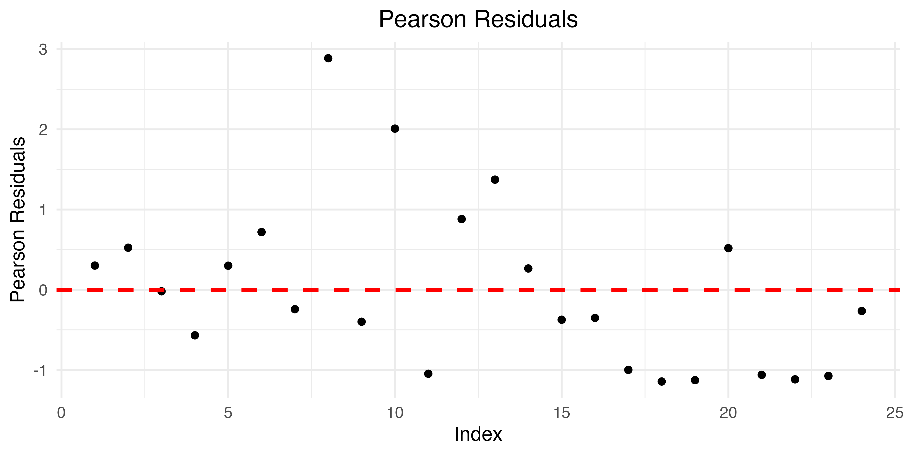
5.5.2 \(H_{3}\) Result
No statistically significant evidence was found for the effect of instructional method on the increase in TCT over the retention interval. Treatment coefficients for the linear model suggested meaningful differences exist, but that could not be substantiated with the limited data available. The overall model fit was marginal and was not improved by including interaction effects for the gap and treatment predictors. Therefore, \(H_{3a}\) is rejected for a lack of evidence in support of the claim that learning retention varies with treatment.
A significant treatment effect on the increase in UCE over time was identified using a zero-inflated negative binomial GLM. Specifically, the PWI method showed a significantly lower rate of error increase compared to the reference AR method. As with the TCT analysis, other treatment coefficients suggest that a meaningful effect may exist, but did not reach the traditional threshold of 95% confidence. Despite these limited findings, the model was statistically significant overall. Sufficient evidence does exist to validate \(H_{3b}\)’s broad claim that the change in error rate over time varies by treatment.7
Overall, the implications for \(H_{3}\) are mixed, with the UCE model providing stronger evidence for an effect of instructional method on retention than the TCT model. This difference suggests that time-based performance improvements may not be as sensitive to instructional methods as error rates. While it has little impact on this study, identifying gap is a significant predictor for both iTCT and iUCE is logical and expected, as retention naturally declines over time.
Given the limitations of the study (small sample size, single retention test, variable gap), it would be prudent to interpret these findings as preliminary evidence for the hypothesis, rather than a definitive confirmation. To strengthen these conclusions, further research with larger samples and more repeated measures would be valuable to increase the power to detect treatment effects and estimate them more precisely.
5.6 Workload, Usability, and User Experience
This section explores the relationships between perceived workload, system usability ratings, overall user experience, and the instructional technology assigned. It is accomplished by a thorough analysis of data collected from the TLX and SUS instruments, along with a synthesis of qualitative feedback recorded during each session. Together they provide a rich expression of each participant’s experience.
This analysis focuses on two important aspects of the TLX and SUS data: the results from the learning phase, where instructional technologies were actively used, and how those measures differ from the those observed during recall. This approach provides insight into the perceived workload and usability of each treatment both during use and, by contrast, in its absence. Changes in workload and usability between phases will be evaluated in the context of the experimental design, which suggests any improvement8 must be attributable to some combination of the following factors:
- Shift in the priorities and objectives of the recall phase. Except for participant idiosyncrasies, this effect is assumed consistent for all treatments.
- The elimination of training support during recall, which requires participants to work from memory with limited access to instructions. This factor may vary if some treatments do more to engender reliance than support learning.
- Learning outcomes during the first phase. Some treatments may lead to a better combination of proficiency and confidence than others.
The second and third factors both relate to the instructional treatment, though both express different dimensions of effectiveness. All other known and unknown confounders are controlled for by the study design.
5.6.1 NASA Task Load Index Analysis
All observed and calculated measures from the NASA TLX are summarized by phase in Table 5.25. As detailed in Section 4.4.1.3, source weight, rating, and workload refer to the ranking, value, and weighted score for all workload sources, while task workload is the composite measure of all contributing sources. These data reveal a consistent reduction in perceived workload as participants transitioned to the recall phase. This is evidenced by decreases in overall Task Workload (Learning: M = 57.90, SD = 13.73; Recall: M = 41.82, SD = 14.69) and individual Source Ratings and Workloads. Notably, the Source Weight remained constant (M = 2.50) across phases, suggesting that while the perceived importance of workload sources didn’t change, their intensity diminished.
| Phase | Measure | Mean | SD | Min | Median | Max |
|---|---|---|---|---|---|---|
| 1 - Learning | Source Weight | 2.50 | 1.64 | 0.00 | 3.00 | 5.00 |
| Source Rating | 48.87 | 26.05 | 0.00 | 50.00 | 100.00 | |
| Source Workload | 144.74 | 125.86 | 0.00 | 120.00 | 500.00 | |
| Task Workload | 57.90 | 13.73 | 15.67 | 57.67 | 87.67 | |
| 2 - Recall | Source Weight | 2.50 | 1.68 | 0.00 | 2.50 | 5.00 |
| Source Rating | 35.77 | 25.17 | 0.00 | 30.00 | 100.00 | |
| Source Workload | 104.55 | 112.25 | 0.00 | 67.50 | 500.00 | |
| Task Workload | 41.82 | 14.69 | 11.00 | 38.50 | 82.00 |
Despite this overall trend, the data exhibits considerable individual variability, as shown by high standard deviations and wide ranges, particularly in Source Workload (0 to 500 in both phases). The consistently lower median values compared to means indicate positively skewed distributions, suggesting that while most participants experienced reduced workload during recall, a subset continued to find certain aspects highly demanding.
These findings provide a basis for understanding how different instructional methods may have influenced workload perceptions across the experimental conditions. This section will explore each of the following aspects of that influence workload during learning:
- Q1: Which sources are most important to participants’ perception of workload, regardless of treatment?
- Q2: How does the perceived impact of each source differ across treatment groups?
- Q3: For each treatment, which source(s) had the greatest overall influence on perceived workload?
- Q4: Is there a reliable relationship between overall workload and the instructional treatment?
Together, the answers will provide a comprehensive understanding of relationships between how participants perceive workload, how they quantify it for each task / treatment, and factors underlying that association. The results will offer insights into the cognitive, physical, and emotional demands imposed by different instructional technologies and their implications for task performance and learning outcomes.
5.6.1.1 TLX Q1: Participant Ranking of Source Weights
To understand which of the TLX’s six sources are most important to all participants’ perception of workload, a Friedman test of repeated measures was conducted. This non-parametric test does not assume normality and accounts for the within-participant variability inherent in the repeated measures of survey data. Using friedman_test from the coin package confirmed significant (122.1, p < 0.001) differences in source rankings by participants. The subsequent post-hoc test calculated pairwise differences using a Wilcoxon signed-rank test and Bonferroni correction for multiple comparisons.
+--------+---------+---------+---------+---------+------+
| group1 | EF | FF | MD | PD | PF |
+========+=========+=========+=========+=========+======+
| FF | 0.18 | NA | NA | NA | NA |
+--------+---------+---------+---------+---------+------+
| MD | 1.00 | 1.00 | NA | NA | NA |
+--------+---------+---------+---------+---------+------+
| PD | < 0.001 | < 0.001 | < 0.001 | NA | NA |
+--------+---------+---------+---------+---------+------+
| PF | < 0.001 | 0.004 | < 0.001 | < 0.001 | NA |
+--------+---------+---------+---------+---------+------+
| TD | < 0.001 | 0.02 | < 0.001 | < 0.001 | 1.00 |
+--------+---------+---------+---------+---------+------+ The results of stats::pairwise.wilcox.test, as tabulated in Table 5.26, show significant differences for most pairs. In particular, Physical Demand (PD), Performance Factor (PF), and Temporal Demand (TD) are significantly different from all other sources, with the exception of TD vs PF and FF (Frustration Factor). Pairs with significant differences indicate substantial disagreement among participants about the ranking of the corresponding sources. Less polarizing pairs have higher p-values, with those over 0.05 of similar importance to participants. Overall, the number of significant and strongly significant findings shows that participants rank sources very differently. The distribution of rank by source is shown in Figure 5.35.
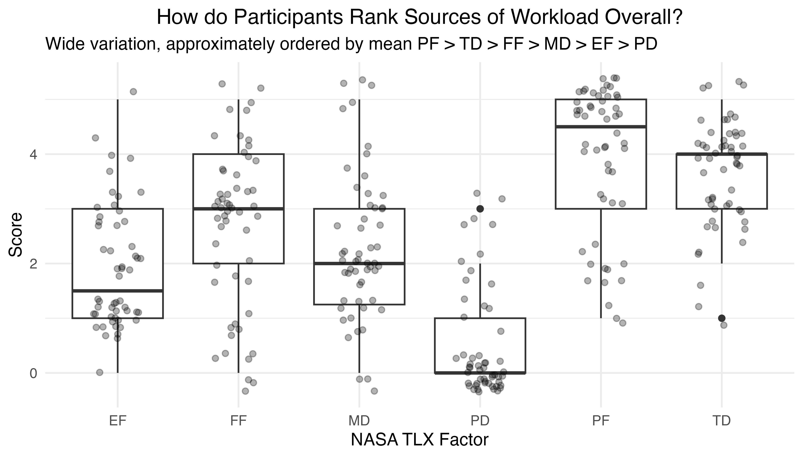
Kendall’s coefficient of concordance, a measure of inter-rater agreement, was used to further assess the rankings across the six sources of workload. Results from the kendall function of the irr package (W = 0.01, p = 1.00) indicated negligible agreement among participants, confirming that workload rankings are highly individualized. Low agreement in ranking has lead other researchers to question the utility of the TLX’s weighting scheme (Bustamante and Spain 2008, Byers et al 1989). Regardless, it remains the officially recommended methodology (Heart 2006).
5.6.1.2 TLX Q2: Source Ratings by Treatment
Figure 5.36 was created to understand how the sources of perceived workload vary by treatment group. All combinations of treatment and source of workload are arranged in a heatmap, where each cell is the mean rating for the corresponding source and treatment. Temporal Demand consistently rate as the most important workload source across all treatments, with mean ratings all above 66.1. This suggests that all participants experienced substantial time pressure. Physical Demand is consistently rated as the least important source, with all mean ratings below 25.8. This indicates that the assembly task is not perceived as physically demanding in any group.
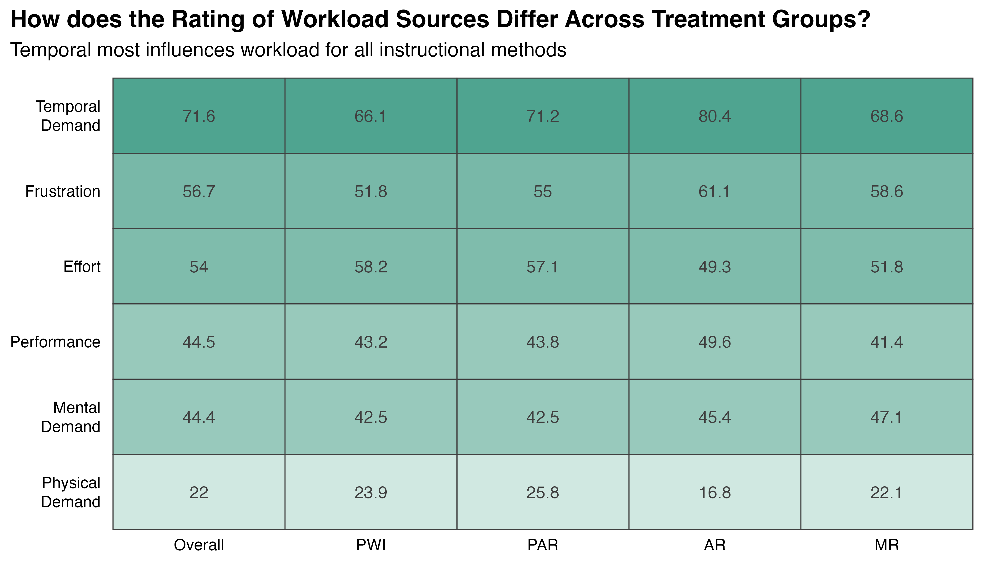
There are other subtle but noteworthy differences between treatments. AR has the highest Temporal Demand rating, perhaps due to the groups’ lack of familiarity with the system. PAR and PWI have the highest Effort ratings, indicating those participants felt challenged by their work, or less concerned with other factors. Despite these differences, the overall pattern of factor importance remains relatively consistent across treatments, as seen in the uniform vertical gradient of the heatmap.
To better quantify these differences, significance tests were conducted for the difference in rating, by treatment, for all sources. The Kruskal-Wallis rank sum test, which is appropriate for these discrete ordinal values, failed to identify any significant effects, further evidence that the ratings for each source are consistent across treatment groups. There appears to be no meaningful relationship between the task-treatment a participant completes and their perception of the factors most important to their overall workload.
5.6.1.3 TLX Q3: Treatment Effect on Weighted Source Workloads
Where the previous section explored changes across the treatment axis of fig-tlx-q2-heat for unweighted source ratings, this section tests the differences across sources for weighted source workloads. Figure 5.37 illustrates the relative contributions of each source to the total workload in each treatment. A fairly consistent progression from the highest contributor, Temporal Demand, to the lowest, Physical Demand is obvious. While there is some variation in between, those sources act as the high / low points for all treatments.
`summarise()` has grouped output by 'treatment'. You can override using the
`.groups` argument.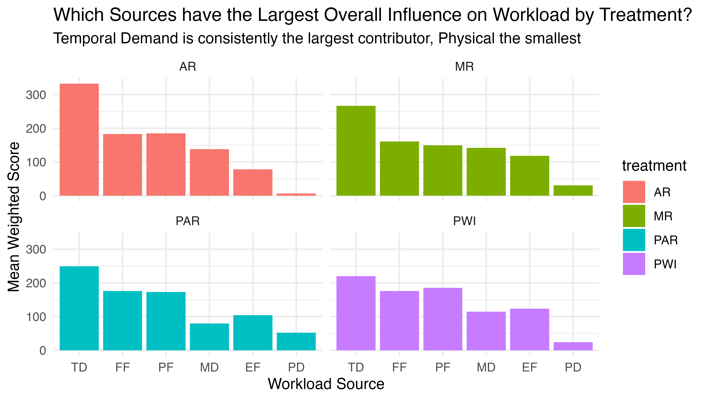
Friedman tests show these workload differences are significant for all treatments (p < 0.001 in each), confirming that the sources perceived most influential to overall workload vary by treatment. To explore the nature of those differences, Dunn’s test for pairwise multiple comparisons of ranked data is applied with Bonferroni correction. Of the 60 pairs tested9, seventeen significant differences were identified (AR: 6, PWI: 4, PAR: 4, and MR: 3), all involving Temporal Demand, Physical Demand, or both. The four central sources (FF, PF, MD, and EF) are each involved in 3-4 significant pairs.
In summary, while all treatments show significant differences in how source workloads are perceived, only Temporal and Physical Demands emerge as reliably different in all cases. The relative importance of other workload sources varies in magnitude and significance, as Figure 5.37 implies.
5.6.1.4 TLX Q4: Task Workload by Treatment
Having examined the individual components of workload, the analysis now focuses on overall Task Workload (TWL, the sum of weighted source workloads) and its relationship with the assigned instructional treatment. Of particular interest is whether any treatments have a significant positive or negative influence on perceived workload. Such influences could indicate aspects of user experience that are uncontrolled mediators of task performance. Once again, the Kruskal-Wallis test is used for comparison and the results are shown in Figure 5.38.
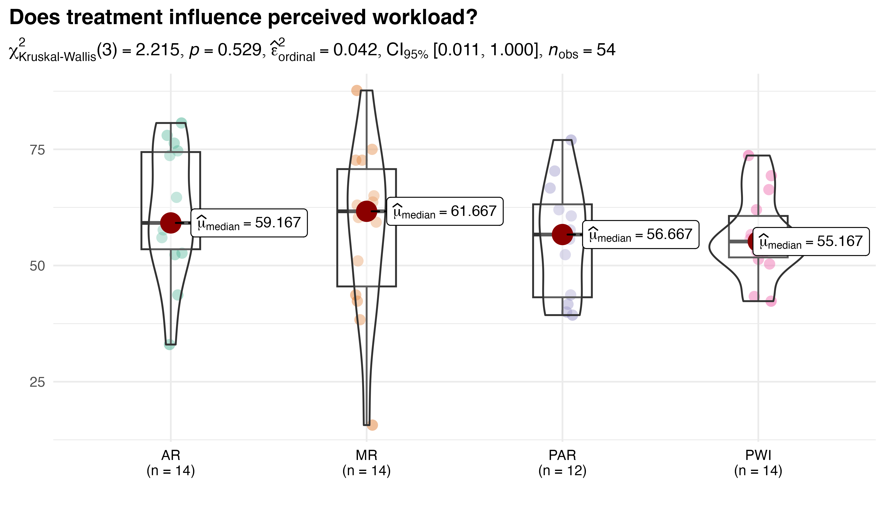
No significant differences are identified (p = 0.53). Visual inspection shows that median TWL values are quite similar for all treatments and all IQRs overlap. This result is somewhat surprising, given the added complexity and occasional issues associated with the AR and MR interfaces. It may suggest that technical complexity has limited effect on perceived workload, especially in the recruited demographic.
5.6.1.5 TLX Results
The TLX analysis revealed several important insights into the workload experienced by participants across different instructional technologies. Notably, there was a consistent reduction in perceived workload as participants transitioned from the learning to the recall phase, suggesting that all instructional methods led to some degree of task familiarization. Temporal Demand emerged as the most significant contributor to workload across all treatments, indicating that time pressure was a universal challenge. Conversely, Physical Demand was consistently rated as the least important factor, implying that the assembly task was not physically taxing. Interestingly, despite the varying complexities of the different instructional technologies, no significant differences were found in overall task workload between treatments. This unexpected result warrants further investigation.
Consistent patterns of source ratings and workload across treatments are evident, but accompanied by little statistical significance. This may suggest that the inherent nature of the task, rather than the assigned instructional method, primarily determines which aspects of workload are most important to the participants. The high individual variability across TLX metrics also highlights the importance of considering personal factors in designing and implementing instructional technologies.
5.6.2 System Usability Scale Analysis
The System Usability Score (SUS) provides a complementary view of the participant experience. Where TLX is focused on perceived workload, SUS is designed to provide a simple, one number assessment of overall usability. Despite its simplicity, the SUS is well-respected and often used. Table 5.27 summarizes the raw SUS scores collected during the learning phase of this study, representing the usability of the instructional technology. Five-number summaries are provided for each treatment group for both phases.
| Treatment | Mean | SD | Min | Median | Max | |
|---|---|---|---|---|---|---|
| AR | Score | 63.0 | 15.9 | 37.5 | 66.2 | 90.0 |
| Rank | 42.9 | 31.3 | 0.7 | 44.5 | 96.1 | |
| MR | Score | 62.5 | 20.8 | 7.5 | 61.2 | 87.5 |
| Rank | 43.9 | 35.5 | 0.0 | 29.6 | 94.1 | |
| PAR | Score | 68.8 | 14.1 | 35.0 | 72.5 | 85.0 |
| Rank | 54.8 | 30.9 | 0.4 | 63.8 | 91.3 | |
| PWI | Score | 71.8 | 16.6 | 37.5 | 77.5 | 92.5 |
| Rank | 60.4 | 35.8 | 0.7 | 77.2 | 97.5 |
The benchmark distribution for these scores is \(\text{SUS} \sim \mathcal{N}(\mu = 68, \sigma = 12.5)\). Despite being on a 100-point scale, raw SUS scores should not be interpreted as percentages. For example, a score of 68 is indeed 68% of the maximum, but only represents the 50th percentile. To improve the interpretability of the raw scores, it is considered best practice to convert to percentile rank by normalizing:
\[ \text{SUS}_{rank} = \Phi\left(\frac{\text{SUS} - \mu}{\sigma}\right) \times 100 \tag{5.5}\]
where \(\Phi\) is the cumulative distribution function (CDF) of the standard normal distribution. Values transformed in this manner can be interpreted in terms of letter grades on the traditional 10-point scale. The benchmark parameters \(\mu\) and \(\sigma\) were primarily developed during 500 studies of commercial, publicly available products. In research and product development, where SUS percentile ranks and letter grades may seem harsh or unrealistic, they are more commonly used to track improvement over time rather than for absolute comparison.
With that in mind, percentile ranks are also included in Table 5.27. The overall median rank of 56.4% gives these systems a failing grade overall, relative to commercially available products. Performance by treatment ranges from 77.2% for PWI to 29.6% for MR, with PAR scoring 63.8% and AR 44.5%. While all of these roughly align with observed interactions, the D letter grade for PAR, a mature commercial product, is noteworthy.
Following best practices, subsequent SUS analysis will utilize the transformed SUS percentile ranks. In addition to improved interpretability, this also accounts for the non-linear nature of the raw scores, enabling more meaningful comparisons. The monotonic nature of this transformation, which preserves the data’s original order, will have no affect on the statistical conclusions for the methods employed. Figure 5.39 compares the distribution of SUS across treatments.
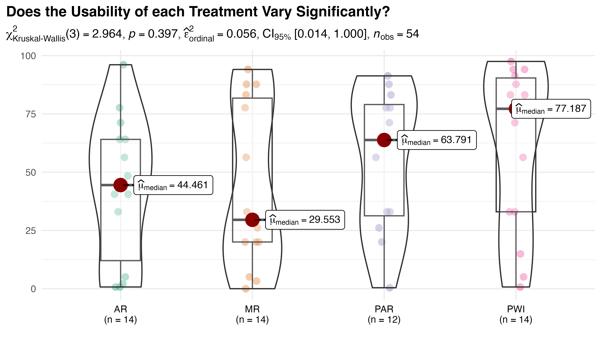
No statistically significant overall difference is identified (p = 0.40), likely due to the very large range of scores found in every treatment. While the effect size is quite small (\(\hat{\varepsilon}_{rank}^{2}\) = 0.056), the progression of median values aligns with expectations based on the complexity associated with each treatment: PWI > PAR > AR > MR. This suggests that, while the technologies differ in complexity, their perceived usability during learning is not drastically different–an unexpected result.
Those learning scores were compared with SUS during recall to test for significance using the Wilcoxon signed rank test for paired samples. As seen in Figure 5.40, the difference is statistically significant (p < 0.001) and practically meaningful. The median value for \(SUS_{R}\) (87.70) is a 31.34 point improvement in usability from the learning phase (\(SUS_{L}\) = 56.36). The large negative effect size (\(\hat{r}^{2}_{biserial}\) = -0.644) with relatively narrow 95% confidence interval [-0.792, -0.424] suggests this finding is robust.
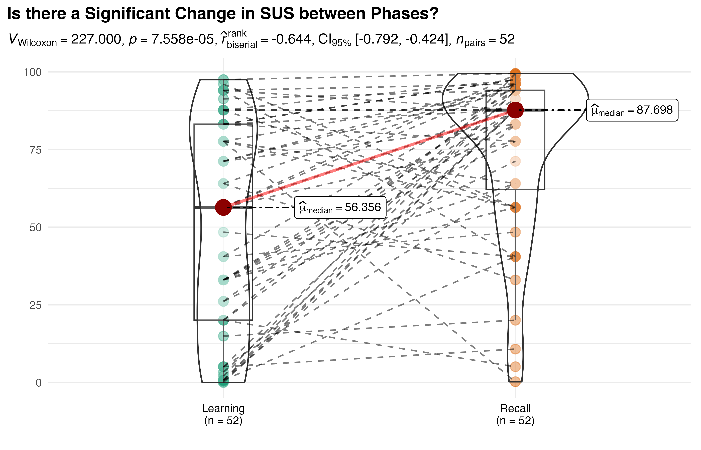
This result implies that usability is increased in recall due to some combination of (1) eliminating the instructional technologies as a source of complexity, and (2) learning effects preparing participants for independent work. To evaluate the relationships between that difference and the treatments, two more tests were conducted. First, the Wilcoxon test is again employed to confirm that the change in SUS is significant (i.e., reliably non-zero) within each treatment. The results of these paired tests are summarized in Table 5.28.
# A tibble: 4 × 8
treatment n median_diff wilcox_statistic p_value pv_adj sig effsize
<chr> <int> <dbl> <dbl> <dbl> <dbl> <chr> <dbl>
1 PWI 14 5.41 79 0.0211 0.0844 ns 0.655
2 MR 14 44.9 76 0.0360 0.108 ns 0.537
3 AR 14 31.2 86 0.0382 0.108 ns 0.562
4 PAR 10 23.1 46 0.0665 0.108 ns 0.596These calculations utilize a normal approximation to address ties (AR) and zero values (PWI and MR), and p-values are adjusted for multiple comparisons using the Holm method. The results indicate that, despite large effect sizes (\(r\) > 0.50 for all treatments), none of the observed differences can be conclusively attributed to the treatments (adjusted p-values > 0.08 in all cases) given the sample size and variability. A final test was conducted to determine if the changes differ by treatment, as shown in Figure 5.41. Once again, no significant differences were identified (p = 0.479).
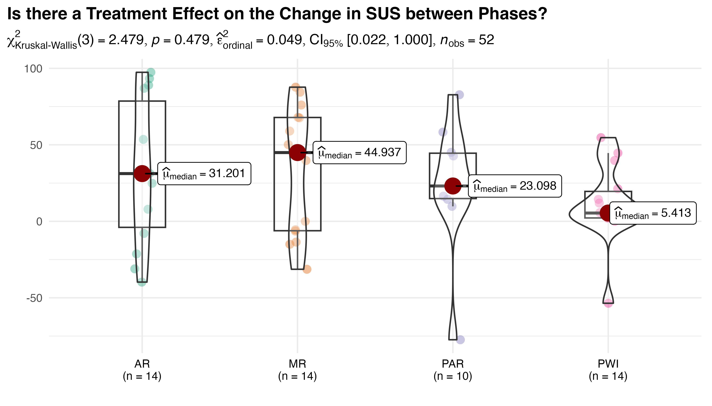
5.6.2.1 SUS Results
The SUS analysis revealed several key findings. During the learning phase, the overall usability reported for all instructional technologies was substantially below commercial benchmarks. This includes both the PAR, a commercial system, and PWI, the experimental control and standard instructions for the lab. While poor by SUS benchmarks, the relative scores for each treatment generally aligned with observed interactions and participant feedback. No statistically significant differences in usability were reported for the treatments used during learning. This unexpected result suggests that, while the technologies differ in complexity, their perceived usability during learning is not drastically different. Individually, participants experienced a significant increase in SUS with phase, but there isn’t sufficient evidence to attribute that change to the assigned treatment, despite large observed differences and effect sizes. Furthermore, the magnitude of usability improvement did not differ significantly between treatments.
Based on the design of this study, it is likely that the improvement in SUS primarily originates from some combination of reduced complexity during retention and participant preparation during learning. However, these results provide no evidence regarding the balance of those effects. Overall, these results challenge some common assumptions about the usability of different instructional technologies and highlight the need for a more nuanced understanding of how usability impacts learning and performance in manufacturing assembly tasks.
5.6.3 Qualitative Feedback Analysis
As the final lens through which to view the overall participant experience, all provided feedback was analyzed using thematic, sentiment, and comparative analysis techniques. Several recurring themes emerged, including device usability, learning experience, physical comfort, instruction clarity, participant strategy, cognitive aspects, and overall experience. This analysis was greatly aided by the use of a large language model (Claude 3.5 Sonnet) to find patterns and synthesize hundreds of lines of feedback. The resulting insights were grouped into by- and cross-treatment observations, as summarized in the following sections.
5.6.3.1 PWI Treatment Group
Generally mixed to slightly negative sentiment.
Key Findings:
- Commonly cited difficulties in distinguishing parts, especially black ones.
- Considered simpler and more flexible than technological alternatives
- Hampered by poor overall quality of the instructions.
- Quick memorization of the process, typically by the 3rd or 4th car.
- Development of personal strategies for part retrieval and assembly order.
- Reliance on spatial memory and mental imagery of the finished car.
- Dissatisfied by the fixture requirement, wanted to be able to rotate the car.
The PWI method, while familiar and flexible, presents challenges in instruction clarity, particularly for complex or visually similar parts. Its effectiveness appears to be significantly influenced by individual characteristics like color perception and prior LEGO experience. The method promotes the development of personal memory strategies but may benefit from incorporating more detailed visual cues or 3D representations.
5.6.3.2 PAR Treatment Group
Initially positive sentiment, shifting towards negative as users became familiar with the task.
Key Findings:
- Considered helpful for initial learning but often too constraining after task familiarity.
- Inconsistent auto-advance feature was a major source of frustration, affecting agency and motivation.
- Tendency to work ahead of instructions once familiar with the process.
- Use of bin arrangement as an unexpected memory aid.
- Compared favorably to PWI for learning but considered less suitable for continued use.
PAR shows promise for initial training but faces challenges in adapting to user progress. The system’s pace and control mechanisms significantly impact user experience, sometimes negatively affecting motivation and sense of agency. Future iterations might benefit from more adaptive pacing and reliable user control features.
5.6.3.3 AR Treatment Group
Overall positive sentiment, with enthusiasm for the technology tempered by usability issues.
Key Findings:
- Generally seen as better for training and confidence-building compared to other methods.
- Frequently described as “fun” or “cool,” indicating high user engagement.
- Common issues with unreliable button interaction, limited field of view, and neck strain.
- Holograms sometimes obscured real-world view or lacked precision for small parts.
- Unforeseen ergonomic challenges and perceptual impacts (e.g., dimming effect).
AR demonstrates strong potential for engaging and effective training, particularly for complex tasks or diverse learning styles. However, current hardware limitations and ergonomic issues present significant challenges. Future developments should focus on improving user interaction, expanding field of view, and addressing physical comfort concerns.
5.6.3.4 MR Treatment Group
Positive overall sentiment, with appreciation for learning benefits despite technical limitations.
Key Findings:
- Valued for combining digital instructions with real-world overlay, particularly for complex steps.
- Consistent issues with tracking, limited field of view, and occasional misalignment of virtual objects.
- Development of strategies to work around system limitations.
- Seen as having a steeper learning curve than simpler methods.
- Unanticipated use of digital PWI within the MR system for better part differentiation.
Most feedback echoed that from the AR treatment group, which is expected given the similarities. MR users more commonly cited technical issues related to misalignment and tracking issues. Very few took advantage of, and none specifically cited, the added flexibility offered by MR, allowing users to freely manipulate the workpiece.
5.6.3.5 Cross-treatment Observations
Many participants noted a change in their preference and performance as they became more familiar with the task. While users of augmented methods (AR, MR, PAR) often reported these methods as helpful for initial learning, several mentioned they became limiting once the task had been mastered. Some participants shared how this and related issues affected their motivation and sense of control. Collectively, those comments suggested that good training methods don’t simply direct the learner’s passive actions. Instead, they promote active engagement in the learning process.
Participants also noted how their individual characteristics affected the experience. Feedback about their height, vision, or learning style influencing method effectiveness was provided for all treatments. To address these issues, several participants reported developing their own strategies to work with or around the systems. For example, many used the correspondence between assembly order and left to right bin arrangement to help learn the task, regardless of the instructional method provided.
Environmental factors were more common than expected in participant feedback. Comments about background noise, workspace setup, and lighting conditions were scattered across different treatment groups. While uncommon, this feedback emphasizes the importance of considering the suitability of these systems for the environents they are intended for deployment in.
5.7 Challenges and Unexpected Observations
A variety of challenges and unexpected observations were encountered during the conduct of the protocol. While some echo participant feedback, the following observations were recorded by the research team. All are included to provide a complementary viewpoint of participant experience. Beyond mundane challenges associated with participant scheduling and attendance, and the expected challenges of consistency in data collection (both documented elsewhere), most of what is described below can be grouped into instructional design, technical issues, and participant idiosyncracies.
Instructions in the PWI treatment were unexpectedly problematic. An assumption of the experimental design was that the PWI would provide a well-tested and validated procedure for baseline performance. The research team’s prior experience with the instructions and untested confidence in their effectiveness led us to overlook these issues, which significantly impacted the PWI results. Their limitations quickly became clear, particularly when it came to discerning the type, placement, and orientation of black parts. Where the edge outline of other parts are relatively obvious, the edges of black parts are much more difficult to discern, especially in the top and three-quarter views. To compound this problem, various arrangements of parts 75, 59, 75, and 67 could achieve the results pictured in steps one and two. As a result, many participants incorrectly placed these parts, either due to misreading the instructions or simply deciding to improvise. It should be noted that the proper placement of these pieces was much more easily interpreted from the second and third step images, where earlier pieces are shown in grey, with obvious outlines. This seemingly obvious technique was only identified by one participant, at which time it was a revelation even to the research team.
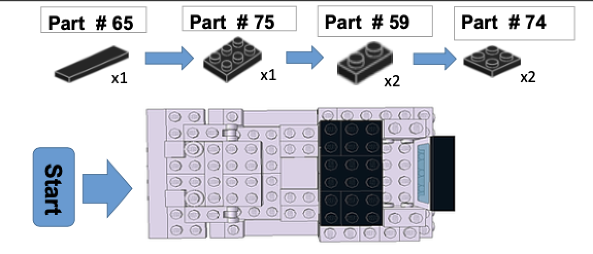
Another limitation of the PWI was an over reliance on top-down imagery. Problems related to this were less prevalent, but some participants did struggle with the placement of parts 1 and 3 in the final step due to their obscured placement. This limitation was acknowledged, in part, by the inclusion of a three-quarter view of the completed assembly, but it provided little assistance for the problematic parts, which are also obscured in that view. This issue was less prominent it did negatively influence all measures of PWI performance.
The augmented systems were not without issue. Because gesture based systems are not 100% reliable, some participants from all augmented treatments encountered control issues that ranged in frequency and severity. In the PAR treatment, inconsistencies in the auto-advance detection systems led to false positive (unintended) and false negative (not recognized) triggers. When either occurred, participants had to recognize the error and manually correct for it, finding the correct place in sequence with forward / back buttons. A mix of confusion, frustration, and interrupted flow resulted, though its impact varied. Similar problems plagued the manual trigger methods used by PAR, AR, and MR. Some participants using HoloLens2 based systems also encountered tracking discontinuities, during which the interface momentarily goes blank (dropouts). The time lost to these events was accounted for in the TCT calculations but their indirect effects on participant performance are not easily quantified. This was especially common in the MR treatment where sophisticated model-based tracking methods were employed, and was exacerbated by some physical characteristics of individual participants.
Participants exhibited a range of tendencies in the way they directed their view. While all used some a combination of head and eye motion, some were much more reliant on one than the other. The HL2’s limited field of view exaggerated these differences by requiring AR and MR users to adjust move more to keep their view centered in the display. Taller participants that were more reliant on head motion typically resulted in very top-down view of the work surface, with too few contrasting features to support robust tracking. This resulted in more tracking dropouts that occasionally led to other system instabilities. In contrast, shorter participants experienced more robust tracking overall in AR and MR, but may have benefited less from its overlays due to the less informative viewing angle. Participants of average or greater height that relied mostly on eye motion were prone to have a line of sight centered below the HL2’s display when looking at the work surface. This obviously limited the utility of AR and MR instructions, but that effect was not directly quantifiable. Participants that exhibited this particular behavior were labeled “down-lookers” by the research team, a sign that the problem was unexpected but not uncommon.
Formally, these forms of head-eye coordination are described as “gaze patterns,” and our so-called down-lookers would be classified as “eye-dominant gazers.” The ramifications of this were largely overlooked by the research team prior to witnessing it during the trials. Presumably, we naturally accounted for any issues encountered by adjusting our viewpoint, HL2 fitment, and/or behavior, without acknowledging the corrections. Unfortunately, the experimental design minimized ways that participants could compensate. In particular, the fixed height work surface required for the PAR system prevented us from accommodating for these individual differences.
The tracking accuracy and display brightness of the HL2 sometimes made it difficult for participants to discern the proper placement of parts. The small size of Lego parts and precise layout of their studs made the tasks sensitive to tracking accuracy. Poor registration or drift in tracking sometimes made it difficult to interpret the instruction and place bricks properly. At times this seemed complicated by the presence of the brick hologram itself, which partially obscured the real-world objects.
Surprisingly few participants assigned to the MR treatment took advantage of its primary affordance. Despite the absence of a fixture, many completed each task with the workpiece in its initial orientation. Some rotated it, but very few picked it up to take full advantage of the manipulation capabilities of this system. Worse yet, the lack of a fixture led to issues with workpiece stability, causing unwanted translation and/or rotation that sometimes resulted in breakages that might not have otherwise occurred.
AR and MR users encountered a variety of other minor issues related to the system’s tracking, battery life, performance, and brightness. Participants with long hair that draped into view, bulky long sleeves, or unusually long fingernails led to hand tracking issues that were mostly easily corrected for. The limited battery life of the HL2 required careful maintenance when several trials were conducted back-to-back. The limited capabilities of the the HL2’s CPU/GPU sometimes led to framerate and/or latency issues that complicated the choreography of MR demonstrations, along with monitoring, recording, and editing videos, but rarely had any noticeable effect on participant performance.
Except as/if noted elsewhere, no modifications were made to the protocol to account for these issues. Most patterns emerged late enough that such changes would have invalidated previous results and compromised any findings. Given the practical constraints of this study, it was decided to carry on with an understanding of the potential limitations and how they might affect the results. Mixed-effect modeling methods were used to help isolate the random effect of some of these issues, but that was not always the most suitable analytical approach. Resulting implications to interpretation and generalization will be detailed in the Conclusions chapter to follow, along with recommendations to improve future work based on these findings.
Participant 1063 was assigned to the AR treatment and contributed two completed learning-task observations. That session was marked by unusually severe system interruptions, rendering it unrepresentative of typical performance. For that reason, the participant’s first-session data were excluded from subsequent hypothesis testing.↩︎
For this interpretation, t values with a magnitude greater than 2.0 are taken as likely significant.↩︎
This recall sample reflects the post-pilot first-session dataset excluding participant 1063, as described above.↩︎
This change affected the \(H_{2b}\) analysis only, reducing the aggregated sample for reliance tests from 53 to 48: PWI 12, PAR 10, AR 12, and MR 14. The broader recall dataset used for other recall analyses in this chapter was unchanged.↩︎
This limit was never reached.↩︎
Appendix Section F.3.1 records a correction to the interpretation of this model and discusses the implications for the retention findings.↩︎
Appendix Section F.3.1 records a correction to the interpretation of this model and discusses the implications for the retention findings.↩︎
Care must be taken in evaluating “improvement” for these measures. Where an increase in usability (SUS) is seen as an improvement, the opposite is true for measures of workload (TLX), where decreases are desirable.↩︎
Four treatments with six sources each = 4 * (6 * (6 - 1)) / 2 = 4 * 15 = 60↩︎